This paper was prepared for the April 2008 Panel Meeting of Economic Policy in Brussels.
You have full text access to this content
The governance and performance of universities: evidence from Europe and the US
Article first published online: 18 DEC 2009
DOI: 10.1111/j.1468-0327.2009.00238.x
© CEPR, CES, MSH, 2010
Additional Information(Show All)
How to CiteAuthor InformationPublication History
How to Cite
Aghion, P., Dewatripont, M., Hoxby, C., Mas-Colell, A. and Sapir, A. (2010), The governance and performance of universities: evidence from Europe and the US. Economic Policy, 25: 7–59. doi: 10.1111/j.1468-0327.2009.00238.x
The Managing Editor in charge of this paper was Jan van Ours.
Publication History
- Issue published online: 18 DEC 2009
- Article first published online: 18 DEC 2009
- Abstract
- Article
- References
- Cited By
Summary
- Top of page
- Summary
- 1. Introduction
- 2. Correlations between university autonomy and university output
- 3. An empirical strategy for obtaining credibly causal evidence on the effects of autonomy and competition
- 4. The effects of autonomy and competition on the output from a given educational expenditure
- 5. Competition for research grants
- 6. Lessons for europe
- 7. Conclusions
- Discussion
- References
- Appendix
We test the hypothesis that universities are more productive when they are both more autonomous and face more competition. Using survey data, we construct indices of university autonomy and competition for both Europe and the United States. We show that there are strong positive correlations between these indices and multiple measures of university output. To obtain causal evidence, we investigate exogenous shocks to US universities’ expenditures over three decades. These shocks arise through the political appointment process, which we use to generate instrumental variables. We find that an exogenous increase in a university’s expenditure generates more output, measured by either patents or publications, if the university is more autonomous and faces more competition. Exploiting variation over time in the ‘stakes’ of competitions for US federal research grants, we also find that universities generate more output for a given expenditure when research competitions are high stakes. We draw lessons, arguing that European universities could benefit from a combination of greater autonomy and greater accountability. Greater accountability might come through increased reliance on competitive grants, enhanced competition for students and faculty (promoted by reforms that increase mobility), and yardstick competitions (which often take the form of assessment exercises).
--- Philippe Aghion, Mathias Dewatripont, Caroline Hoxby, Andreu Mas-Colell and André Sapir
1. Introduction
- Top of page
- Summary
- 1. Introduction
- 2. Correlations between university autonomy and university output
- 3. An empirical strategy for obtaining credibly causal evidence on the effects of autonomy and competition
- 4. The effects of autonomy and competition on the output from a given educational expenditure
- 5. Competition for research grants
- 6. Lessons for europe
- 7. Conclusions
- Discussion
- References
- Appendix
With increasing globalization has come increasing scrutiny of the differences in the performance of countries’ universities. Such performance differences are thought to be especially important for advancing science, technology, and the industries that depend upon them. Thus, it is not surprising that when Shanghai University and other organizations began to publish indices of university output, the indices garnered a great deal of attention. Although such indices are undoubtedly flawed, they highlight apparently massive differences in the output of different countries’ universities. Some European policy-makers see in the indices a potential explanation for their countries’ disappointing economic growth. This is not an unreasonable deduction because the growth of technology-intensive industries has been particularly disappointing in Europe compared to the United States (US) and some other countries. US universities are obvious positive outliers in performance on the international indices. At present, several European countries are considering reforms to their university systems that would make them more like those of the US. Beyond the anecdotal evidence just mentioned, there is, however, little factual basis for the claim that if non-US universities modelled themselves on American ones, they would produce similar output. Furthermore, what aspects of American universities deserve imitation? Surely not all.
This paper attempts to fill this evidentiary gap. Specifically, we hypothesize that more autonomous universities that need to compete more for resources are more productive. To be clear, the hypothesis is that a combination of autonomy and competition makes universities more productive. We do not hypothesize that autonomy alone or competition alone would have similar effects. There is some danger in giving universities great autonomy if they are not in an environment disciplined by competition for research funding, faculty, and students. The autonomy might be used to pursue goals other than expanding the university outputs that are valued by society. There is little point in promoting competition among universities if they do not have sufficient autonomy to respond with more productive, inventive, or efficient programs.
Why do we hypothesize that autonomy and competition, in combination, may improve universities’ output? First, we are guided by economic logic. In higher education, the production function is very hard for outsiders to observe. In research, government policy-makers are unlikely to understand the production function even if they could observe it. Under such circumstances, centralized government control may be much less effective, as a form of governance, than making largely autonomous organizations compete with one another for resources and prizes. Second, we are guided by correlations. In the next section, we show that universities’ performance is correlated with their autonomy and competitive environment. Within Europe, we show that some countries, such as the United Kingdom (UK) and Sweden, have unusually autonomous universities and unusually productive universities. For the US, we show that states’ public universities differ considerably in their autonomy and the degree to which they face local competition from private universities. We find that universities’ output is higher in the states in which they are more autonomous and face more competition. Third, certain facts about US universities direct us away from explanations other than autonomy and competition. Highly regarded international assessments suggest that primary and secondary education in the US is mediocre at best compared to its developed country counterparts. Thus, US universities’ success is unlikely to be due to the better preparation of their incoming students. It is also unlikely to be due to high levels of government funding that is guaranteed -- that is, for which universities do not have to compete. Many of the highest performing US universities are private and receive essentially no guaranteed government funding. US public universities also have modest guaranteed funding. Instead, they depend greatly on tuition payments from students (which families -- not government grants -- largely fund) and federal research grants, which are awarded through rigorous competitions (in which private universities also participate). Below, we examine the role that such competitions play in increasing universities’ productivity.
All the empirical analysis in this paper must be viewed as testing the hypothesis that autonomy and competition combined increase universities’ productivity compared to the alternative of little autonomy and little competition. We are unable to test the effect of great autonomy with little competition or great competition with little autonomy. This is because, in practice, we observe autonomy and competition scale up and down together. This is probably a reflection of fundamentals: It is probably politically unsustainable to grant autonomy that is undisciplined by competition, and it is politically pointless to promote competition among universities that have no autonomy. Interestingly, these same fundamentals make it difficult even to measure autonomy and competition as separate concepts. For instance, it is difficult for a university to face substantial competition in an environment where its fellow universities have little autonomy -- since they will not bother to engage in competitive behaviour.
In Section 2, we conduct the correlational analysis mentioned above, both for European universities and for US public universities. In the correlational analysis, we use as our measures of output the well-known Shanghai University ranking and less-known Higher Education Evaluation and Accreditation Council of Taiwan (HEEACT) ranking of world universities. These indices aggregate information on publications, citations, and honours. To obtain measures of autonomy and competition, we conducted a survey of European universities’ leaders, asking questions such as ‘Does your university’s budget need to be approved by the state?’ and ‘What percentage of your university’s budget depends on grants for which you must compete?’ For the US, we cull similar measures from administrative sources and existing surveys. An advantage of the US data is that we can measure governance as far back as the 1950s. Our main findings in Section 2 are that universities with higher Shanghai or HEEACT rankings have greater autonomy and face greater competition.
The correlations shown in Section 2 are merely suggestive. They do not necessarily indicate that university autonomy and competition cause higher output. Reverse causality is quite plausible: Perhaps governments allow very productive universities to be more autonomous and such universities campaign for resources to be allocated by competition, rather than rules. Omitted variables could also be a problem. For instance, universities may enjoy resources and forms of government support that we do not observe. The universities with the greatest difficult-to-observe resources may also enjoy greater autonomy and ‘win’ more research competitions (which could be stacked in their favour).
In Sections 3, 4 and 5, we turn to causal analysis. Specifically, we test whether universities produce more output from an exogenous increase in their resources if they are more autonomous and face more competition. This is (nearly) a sufficient condition for autonomy and competition to cause greater university output. (We say ‘nearly’ because we can only test what universities produce with marginal resources, and it is always possible that they use marginal resources efficaciously and inframarginal resources inefficaciously or vice versa.) Although we would like to conduct causal analysis for Europe, we rely on US states for this part of the analysis. We do this because, first, we have 1950s measures of universities’ governance and competition from private institutions. Since the 1950s are just the beginning of the modern era of higher education, especially of funding for universities, the early measure allows us to greatly limit the potential for reverse causality. Second, we have found instruments that generate exogenous variation in funding for US universities. These instruments depend on vacancies arising on legislative committees in the US and the convoluted processes by which the vacancies are filled. The instruments are fairly complicated and are discussed below and elsewhere (Aghion et al., 2005). The bottom line is that (1) the vacancy filling process generates variation in government funding for universities and (2) the vacancy filling process is so remote from other phenomena that affect universities that we believe that it could affect them only through the funding channel.
For the causal analysis, we measure universities’ output through the patents and research publications produced in their state. Patents are appealing because they are a form of output that is more closely linked to technology and the economy than a Shanghai or HEEACT ranking. Publications are appealing because they are the main cardinal, as opposed to ordinal, measure of output that goes into ranking formulas like the Shanghai and HEEACT ones. (Patents are also a cardinal, as opposed to an ordinal, measure of output.) Cardinal measures are needed for the causal analysis because we need to have comparisons across time to be meaningful. Our patent and publication measures are available for a number of past years so that our analysis is based on 27 years of panel data on US states. Our main findings in Section 4 are that exogenous increases in expenditures of US universities generate more patents if the universities in question are more autonomous and face more local competition (for resources, faculty, and students) from private universities.
In Section 5, we note that the stakes in US research competitions have varied greatly over time. In some periods, more than $20 billion of federal research money has been at stake annually. In other periods, the federal award stakes have been only $1 billion to $5 billion annually. Since the stakes have risen and fallen in a highly non-monotonic way, we can differentiate the effect of an environment rich in research competitions from other time trends. Our main finding is that the effects of universities’ expenditures, autonomy, and competition are all elevated in periods of high stakes competition for federal awards.
In Section 6 we draw lessons for Europe from our US-based causal analysis. We argue for higher education reforms that generate a combination of greater autonomy and greater accountability. We see greater accountability coming through increased reliance on competitive grants, enhanced competition for students and faculty (which is promoted by reforms that increase mobility), and yardstick competitions (which usually take the form of assessment exercises). Finally, Section 7 concludes.
We draw upon several related literatures. Most obviously, we draw upon the large existing literature on university governance. Nearly all of this literature is descriptive, and we rely on it for our understanding of how to measure autonomy. Our 1950s measure of university autonomy is drawn from the report of a national commission on the subject that produced an informative book by Moos and Rourke (1959). Only a few studies attempt to estimate the relationship between universities’ governance and their performance -- most notably, Volkwein (1986), Volkwein and Malik (1997) and Volkwein et al. (1998). Our question is somewhat inspired by the existing, vast literature on education and growth, but that literature’s connection to this paper is tenuous because it tends to use aggregate measures of education (such as average years attained). That literature does not differentiate education investments by type or expenditure, and it certainly does not differentiate them by governance of schools.1
This paper shares instruments and some data with Aghion et al. (2005), but the focus is entirely different. The one theoretical idea we borrow from Aghion et al. (and from work by Acemoglu et al., 2006) is that investments in research-type education should pay off most in areas that are close to the world technological frontier because such areas specialize in innovation.2 Conversely, we expect investments in vocational and lower types of education to pay off most in areas below the technological frontier because such areas specialize in imitation. Sapir et al. (2004) use the same approach to argue that European countries need to invest more in higher, as opposed to vocational, education to attain growth rates typical of the US. In any case, these ideas motivate us to allow the effect of an exogenous increase in education expenditure to vary with proximity to the technological frontier.
For our understanding of the politics behind our instruments, we are indebted to the previous literature on the politics of committee selection and its consequences -- most importantly, Masters (1961), Rohde and Shepsle (1973), Bullock (1985), Squire (1988), Hedlund (1989), Hedlund and Patterson (1992), Munger and Torrent (1993), Stewart and Groseclose (1999), Knott and Payne (2001, 2003), Payne and Roberts (2002) and Payne (2003). For our understanding of patents as a measure of research outcomes, we are indebted to the previous literature on patenting, especially Hall et al. (2001) and Hall (2006).
2. Correlations between university autonomy and university output
- Top of page
- Summary
- 1. Introduction
- 2. Correlations between university autonomy and university output
- 3. An empirical strategy for obtaining credibly causal evidence on the effects of autonomy and competition
- 4. The effects of autonomy and competition on the output from a given educational expenditure
- 5. Competition for research grants
- 6. Lessons for europe
- 7. Conclusions
- Discussion
- References
- Appendix
In this section, we show that measures of university autonomy are correlated with measures of university output. We also show that universities that need to compete for research funding tend to have higher output. We offer this evidence as suggestive--that is, it suggests the hypotheses that we test with analysis that is more credibly causal, in the next section.
2.1. The Shanghai and HEEACT rankings of world universities
In 2003, Shanghai Jiao Tong University began publishing an ‘Academic Ranking of World Universities’ (2008). It is now the best-known measure of universities’ output and it puts weight on six indices, as follows:
- 1The number of alumni from the university who have won Nobel Prizes in physics, chemistry, medicine, or economics or Field Medals in mathematics (10% of the overall index).
- 2The number of faculty of the university who have won Nobel Prizes in physics, chemistry, medicine, or economics or Field Medals in mathematics (20% of the overall index).
- 3The annual number of articles authored by faculty of the university that are published in the journals Nature or Science (20% of the overall index).
- 4The annual number of articles authored by faculty of the university that are in the Science Citation Index-expanded and Social Science Citation Index (20% of the overall index).
- 5The number of Highly Cited Researchers (copyright Thomson ISI, 2008) in the university’s faculty in 21 broad subject categories (20% of the overall index).
- 6All of the above indicators divided by the number of full-time equivalent faculty (10% of the index).
Obviously the choice of criteria and the weights on them are quite arbitrary. They are also heavily weighted toward science. However, the arbitrariness is less problematic than it might seem because, in fact, the available measures that one could reasonably put into any index of university output are highly correlated. For instance, each of the components of the Shanghai index is highly correlated with each other component. Also, the Shanghai index has a correlation of 0.85 or higher with each of three other rankings that use very different methodologies: the HEEACT ranking (2009), the Times Higher Education -- QS World University Ranking (2008), and the Webometrics Ranking of World Universities (2008).
The overall HEEACT ranking is so correlated with the Shanghai ranking that adding it to the analysis would not be instructive. However, HEEACT also publishes scores for universities by field: natural sciences, social sciences, and so on. Each university’s score in each field is based on:
- 1The number of research publications in the relevant field in the last 11 years (10% weight) and the current year (10% weight).
- 2The number of citations to research publications in the relevant field in the last 11 years (20% weight) and last 2 years (10% weight).
- 3The number of highly cited papers in the last 11 years (15% weight), the number of articles in ‘high-impact’ journals in the current year (15% weight), and the H-index for the last 2 years (20% weight).3
In short, we do not argue that either the Shanghai or HEEACT indices are correct (in the sense of having the right formulas) but they are based on criteria that are themselves reasonable measures of output and correlated with other reasonable measures of output.
The Shanghai index assigns the world’s highest ranked university the number 1 and so on down to number 100. After that, universities’ rankings are indicated by a numerical range –‘101 to 151’, for example -- of which we use the mean. Universities below 500 are not given a number.4 We invert the Shanghai index throughout this section so that the university with the highest number is the highest ranked university.
The HEEACT field scores have a mean of about 20 and a standard deviation of about 10. We use the field scores in natural science, engineering, life science, and social science.5
Simply to provide a sense of the numbers to which policy-makers around the world are reacting, we show in Figure 1 the sum of top-500 Shanghai rankings of universities in each country. (This is a very crude indicator that is flawed in multiple ways, but it is precisely the type of indicator that has motivated policy-makers.6) Clearly, the US has the highest sum of rankings and the next nearest country, the UK, has only one-quarter as many. Of course, much of the apparent US dominance is due simply to its population. (For instance, Canada and the UK do slightly better than the US on a per-person basis.) There is no perfect way to correct for population since it is not obvious that the effect of population should be linear. However, one comparison that may be useful is adding up the countries of continental Europe that have the highest sums of rankings until their population is equal to that of the US.7 This procedure (which favours Europe because it selects its areas on university output but does not do the same for the US) generates the bar labelled as ‘USA-sized continental Europe’. This area, with the same population as the US, generates a sum of Shanghai rankings that is only 62% as large.
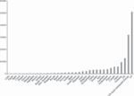
{kind=link}
Figure 1. Variation among areas in universities’ Shanghai rankings Notes: The figure shows the sum of the Shanghai rankings for the universities located in an area. The Shanghai ranking is first inverted (so that 500 is the highest possible ranking) before the summation occurs. The area called ‘US-sized continental Europe’ is described in the text. The source of the rankings is Shanghai Jiao Tong University (2008).
{kind=link}
Japanese universities also do not compare favourably to US universities. To see this, consider that Japan’s sum of rankings is 5,934, which is 92% of the sum of rankings of the state of California. Japan’s population is 3.5 times that of California.
Overall, Figure 1 suggests that US, UK and Canadian universities have higher output than continental European or Japanese universities. Since the US, UK and Canadian universities share some institutional and legal history, this crude evidence points us towards explanations, such as governance, that are systemically related to history. Note also that there is important variation in output within Europe. We explore this in a moment.
Below, where we correlate the Shanghai and HEEACT indices with autonomy and competition variables, we use individual university data. We thus alleviate the problem of accounting for population since each country and US state, with the possible exception of a few, can support at least one university at efficient scale.
2.2. A survey of European universities
Because no measures of autonomy and competition existed for European universities, we surveyed the 196 European universities with Shanghai rankings in the top 500. The survey was generously supported by Bruegel and is described in greater detail in Aghion et al. (2007 and 2008).8 These universities are spread across 14 countries and vary substantially in their age, public versus private control, number of students, and the relative importance of various disciplines (medicine, law, natural sciences, and so on).
In autumn 2006, we sent a questionnaire to university leaders. Among the survey questions were several related to autonomy, competition, and governance more generally. We asked (paraphrasing for succinctness):
- • Does the university set its own curriculum?
- • Does the university select its own students or is there centralized allocation?
- • To what extent does the university select its own professors?
- • How much does the state intervene in setting wages?
- • Are all professors with the same seniority and rank paid the same wage?
- • Does the university’s budget need to be approved by the government?
- • What share of the university’s budget comes from core government funding?
- • What share comes from research grants for which the university must compete?
We also asked what percentage of the university’s professors have their doctoral degrees from the university itself. A high number on this measure, endogamy, suggests that hiring is not open.
It is important to understand that, in surveying European universities, we were mainly attempting to record differences between countries and not within countries. Countries typically have legal and institutional rules within which their universities function. It is this set of rules that we wish to describe. We are less interested in whether a particular university gets special treatment (perhaps because of its history) or how a particular university leader interpreted the questions. In short, we are mainly concerned with whether the survey respondents were representative of their countries.
On this criterion, the survey worked well. While only 71 (36%) of the surveyed universities responded, the universities that responded within any given country had rankings that were representative of the country’s whole population of universities.9
AppendixTable 1 shows the average answer on individual survey questions that are relevant to this paper, for several European countries.10 The table confirms that there is a wide variety in countries’ institutional and governance arrangements. For instance, the share of universities that must get their budgets approved by the government varies from lows of 0 and 13% in Denmark and the UK, respectively, to highs of 100% in Finland, France, and Germany. The share of universities that report that their baccalaureate students are selected via a centralized mechanism, rather than by the university acting on its own, ranges from lows of 0 in Finland and France and 12% in the UK to highs of 83% in Spain and 100% in Ireland. In five countries (Belgium, Denmark, Finland, Sweden, and the UK), faculty may be paid different amounts even if they have identical seniority and rank. On the other hand, at least half the universities in countries like France, Italy, Spain, and Switzerland report that they must pay the same amount to faculty with the same seniority and rank. These same countries (with the exception of Switzerland) are likely to report that their hiring is not mainly controlled internally. Endogamy, which suggests that a country is not open to hiring from the outside, is greater than 50% in Belgium, France, Spain, and Sweden. However, we ought to be cautious about interpreting endogamy because it may also reflect the willingness of foreigners to live in a country, teach and write in that country’s language, and so on. For instance, endogamy is low in Germany and the UK (and dramatically lower in the US) partly because German and English are useful lingua francas.
| Dependent variable: Patents per person in the state (higher education investment variables are instrumented, see notes) | Coeff. (std.err.) |
|---|---|
| |
| Expenditure (thousands) on research universities per person in the cohortb | −0.174 (0.089) |
| Expenditure (hundreds) on 4-year colleges per person in cohortb | −0.177 (0.034) |
| AC Indexc · Exp. (thousands) on research universities per person in cohort | 0.029 (0.008) |
| AC Indexc · Exp. (hundreds) on 4-year colleges per person in cohort | 0.004 (0.002) |
| %Universities Privated · Exp. (thousands) on research universities per person in cohort | 0.081 (0.031) |
| %Universities Privated · Exp. (hundreds) on 4-year colleges per person in cohort | 0.109 (0.011) |
| Proximity to the Frontiere · Exp. (thousands) on research universities per person in cohort | 0.247 (0.136) |
| Proximity to the Frontiere · Exp. (hundreds) on 4-year colleges per person in cohort | 0.278 (0.050) |
| The above variables for 2-year colleges and contemporaneous political variablesf | Yes |
| State indicator variables, cohort indicator variables (equivalent to year indicator variables) | Yes |
| State-specific linear time trends | Yes |
2.3. Similar measures for US universities
Rather than surveying US universities ourselves, we use a combination of administrative data and existing surveys to derive similar variables for American states. We have a response rate of 100% on all variables we use. This is probably because American universities believe that they must respond to information requests, even if they are not official requests from the government. This is because not responding is perceived as a lack of willingness to inform prospective faculty and students. (In other words, the high response rates are probably endogenous to the competition for resources, faculty and students.) We attempt to obtain a US measure that is the parallel for every European measure described in Table A1 in the Appendix. However, the parallel measures are not constructed identically. This is fine for our purposes because we mean to compare governance among US states, not between the US and European countries. We reserve most details of our sources and variable construction for the Data Appendix.
| Country | Belgium | Denmark | Finland | France | Germany | Ireland | Italy | Netherlands | Spain | Sweden | Switzerland | UK |
|---|---|---|---|---|---|---|---|---|---|---|---|---|
| ||||||||||||
| Response rate | 57% | 40% | 20% | 19% | 28% | 67% | 39% | 33% | 67% | 45% | 75% | 40% |
| Average age of the university | 284 | 59 | 73 | 105 | 289 | 259 | 444 | 217 | 342 | 266 | 327 | 242 |
| Average number of professors per university | 572 | 162 | 187 | 540 | 392 | 535 | 1614 | 246 | 2481 | 359 | 401 | 863 |
| Average number of students per university | 21703 | 18169 | 12700 | 7971 | 26218 | 16300 | 44867 | 21420 | 44790 | 27059 | 12803 | 14606 |
| Share of universities in which budget must be approved by the state | 0.63 | 0.00 | 1.00 | 1.00 | 1.00 | 0.50 | 0.14 | 0.25 | 0.50 | 0.20 | 0.92 | 0.13 |
| Share of universities with centralized BA selection | 0.25 | 0.75 | 0.00 | 0.00 | 0.25 | 1.00 | 0.21 | 0.75 | 0.83 | 0.60 | 0.25 | 0.12 |
| Share of universities in which all faculty with same seniority and rank must have same pay | 0.00 | 0.00 | 0.00 | 0.50 | 0.09 | 1.00 | 0.60 | 0.13 | 0.50 | 0.00 | 0.67 | 0.00 |
| Share of universities in which hiring is mainly controlled internally | 1.00 | 0.50 | 1.00 | 0.25 | 0.82 | 1.00 | 0.38 | 0.75 | 0.50 | 1.00 | 0.83 | 1.00 |
| Endogamy: percentage of university’s faculty with PhDs from same university | 62.67 | 40.00 | 10.00 | 53.00 | 8.38 | 49.00 | 24.47 | 33.33 | 69.17 | 58.33 | 24.17 | 8.80 |
| Share of universities that are publicly owned | 0.50 | 1.00 | 1.00 | 1.00 | 0.91 | 0.50 | 1.00 | 0.75 | 1.00 | 0.80 | 0.83 | 0.47 |
| Share of universities that own their own buildings | 1.00 | 0.25 | 0.00 | 0.00 | 0.50 | 1.00 | 1.00 | 1.00 | 1.00 | 0.20 | 0.42 | 0.94 |
| Share of universities that set their own curriculum | 1.00 | 1.00 | 1.00 | 0.50 | 0.91 | 1.00 | 0.81 | 1.00 | 0.67 | 0.90 | 1.00 | 1.00 |
| Percentage of the budget from core government funds | 65.00 | 70.50 | 67.00 | 70.50 | 72.95 | 38.00 | 63.38 | 68.33 | 62.00 | 60.00 | 72.17 | 34.87 |
| Percentage of the budget from research grants for which university must compete | 11.50 | 19.00 | 33.00 | 9.33 | 22.44 | 18.50 | 12.06 | 14.67 | 9.67 | 34.00 | 18.33 | 21.47 |
From now on, we describe a US state’s governance environment by (1) its percentage of universities that are private and (2) autonomy and competition variables that describe the rules for its public universities. We do not bother to describe autonomy and competition variables for private US universities because the distributions would be degenerate. For instance, all American private universities do not seek budget approval from the government, do control selection of their students, do control faculty hiring and salaries, do own their own buildings, and do get a negligible share of their budget from core government funds.
In the 1950s, the governance of public universities in the US was studied by a national commission, the Committee on Government and Higher Education. It produced the three 1950s autonomy and competition variables on which we rely: a university’s freedom from centralized purchasing, a university’s freedom from needing to get its budget approved, and a university’s freedom to hire and pay personnel (not merely faculty but also staff) without government control or the need to follow civil service pay rules. All of these measures are category responses intended to measure degree of autonomy, not yes/no responses.
In the US, institutions of higher education are classified into types (Carnegie Foundation, 2005). The institutions that correspond most closely to European universities are ‘research universities’ and ‘doctoral universities’, which we hereafter call ‘research universities’ for conciseness. Some researchers are also found at 4-year colleges, which are primarily oriented toward granting the baccalaureate degree. It should be noted, however, that some of the best undergraduate programmes (and, thus, the most skilled students) are associated with 4-year colleges. The US also contains 2-year colleges, which teach a curriculum that is primarily vocational and technical. We expect that the autonomy and competition of research universities will be what matters most for the productivity of American universities. However, it is also likely that the autonomy and competition of colleges will matter because some research is conducted there and because some of their graduates become very highly skilled workers.
Fortunately, the 1950s autonomy and competition variables were measured separately for research universities and for colleges. In our causal analysis, we will use the measures for both types of institutions.
2.4. Correlations between university output and an overall measure of university autonomy and competition
We begin by doing factor analysis on our European measures of autonomy and competition, the corresponding modern measures for US public universities, and the corresponding 1950s measures for US public universities. We do not include the percentage of universities that are private in the factor analysis but, instead, use this as a separate variable. In practice, the variables heavily load on a single principal factor in all three analyses. This means that, in practice, universities do not vary on autonomy and then vary independently on competition. If they did, we would obtain at least two principal factors with substantial loadings. This is the basis for our statement that we cannot test the hypotheses that autonomy alone or competition alone improves universities’ productivity. Instead, we test autonomy and competition together.
The autonomy and competition factor for European universities is maximized for universities that (1) do not need to seek government approval of their budget, (2) select their baccalaureate students in a manner independent of the government, (3) pay faculty flexibly rather than based on a centralized seniority/rank-based scale, (4) control their hiring internally, (5) have low endogamy, (6) own their own buildings, (7) set their own curriculum, (8) have a relatively low percentage of their budget form core government funds, and (9) have a relatively high percentage of their budget from competitive research grants.
The factor loadings for the US autonomy and competition index based on recent data are similar except that the building ownership and curriculum setting variables are not used because they are degenerate -- that is, all public colleges and universities in the US report that they set their own curriculum and own their own buildings.
The factor loadings for the US autonomy and competition index based on 1950s data are such that the index is maximized for colleges/universities that report that their purchasing is entirely independent of centralized control, that they need not seek approval of their budget, and that they completely control personnel hiring and pay.
We normalize the first principal factor (hereafter, the ‘autonomy and competition index’ or ‘AC index’) to have a mean of zero and a standard deviation of one.
Figure 2 contains a scatterplot and fitted regression line that show that a European university’s Shanghai ranking is correlated with its autonomy and competition index. (The size of the circles varies with a university’s size because we are attempting to describe the averages for countries and a size-weighted regression is therefore appropriate.) Observe that UK universities are clustered in the upper right corner, having both high AC indices and high rankings. Swedish universities also generally appear in the upper, right quadrant. Spain’s universities are clustered in the lower left corner, having both low AC indices and low rankings. The remaining countries’ universities are somewhere in the middle. The correlation is such that a standard deviation in European university autonomy and competition is associated with 78.5 rank points on the Shanghai index (moving past 78.5 universities, in other words).
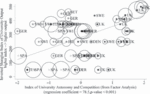
{kind=link}
Figure 2. Correlation between European universities’ output and an index of their autonomy and competition Notes: The figure shows the Shanghai ranking of European universities and also shows their autonomy and competition indices (from factor analysis) based on the Bruegel survey data. The coefficient estimate and p-value shown in parentheses are from a univariate linear regression of the ranking on the autonomy and competition index. Country names are abbreviated as follows: BEL Belgium, DEN Denmark, FIN Finland, GER Germany, IRE Ireland, ITA Italy, NET Netherlands, SWE Sweden, SWI Switzerland, UK United Kingdom.
{kind=link}
Figure 3 shows a similar scatterplot for US states with an AC index based on recent data for public research universities.11 Each state is represented by its top-ranked public university because the AC index describes the environment for them. States with high rankings and high AC indices include Washington, Colorado, Hawaii, Delaware, California, Maryland, Wisconsin, Minnesota and Michigan. States with low rankings and low AC indices include Arkansas, South Carolina, Louisiana, Kansas, Idaho, South Dakota and Wyoming. The last two are states with very small populations, but the other states in this group are large enough to support a public research university. The correlation is such that a standard deviation in US public research university autonomy and competition is associated with 50.3 rank points on the Shanghai index.
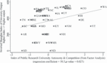
{kind=link}
Figure 3. Correlation between US universities’ output and an index of their current autonomy and competition Notes: The figure shows the Shanghai ranking of each US state’s major research university and also shows the current autonomy and competition index (from factor analysis) for that state’s research universities. The coefficient estimate and p-value shown in parentheses are from a univariate linear regression of the ranking on the current autonomy and competition index. US state names are abbreviated as follows: AL Alabama, AK Alaska, AZ Arizona, AR Arkansas, CA California, CO Colorado, CT Connecticut, DE Delaware, DC District of Columbia, FL Florida, GA Georgia, HI Hawaii, ID Idaho, IL Illinois, IN Indiana, IA Iowa, KS Kansas, KY Kentucky, LA Louisiana, ME Maine, MD Maryland, MA Massachusetts, MI Michigan, MN Minnesota, MS Mississippi, MO Missouri, MT Montana, NE Nebraska, NV Nevada, NH New Hampshire, NJ New Jersey, NM New Mexico, NY New York, NC North Carolina, ND North Dakota, OH Ohio, OK Oklahoma, OR Oregon, PA Pennsylvania, RI Rhode Island, SC South Carolina, SD South Dakota, TN Tennessee, TX Texas, UT Utah, VT Vermont, VA Virginia, WA Washington, WV West Virginia, WI Wisconsin, WY Wyoming.
{kind=link}
Finally, Figure 4 shows the same data except that the AC index reflects the autonomy and competition of public research universities in the 1950s. The correlation is such that a standard deviation in 1950s public research university AC index is associated with 38.7 rank points on the Shanghai index. Although the 1950s index is based on entirely different variables gathered in a quite different way, there are noticeable commonalities between Figure 4 and the previous figure. Once again, we see that states like California, Colorado, Minnesota, Wisconsin and Michigan have high rankings and high AC indices. We see that low rankings and low AC indices again characterize Arkansas, South Carolina, Louisiana, Kansas, Idaho, South Dakota and Wyoming (as well as some other states). In other words, although the 1950s and recent AC indices are not identical, they clearly reflect institutional arrangements that resist change. Such persistent differences in governance probably reflect the idiosyncratic origins of American universities. For instance, Thomas Jefferson, the founder of the University of Virginia, himself set some aspects of the university’s relationship with the state. (In fact, based on our reading of the extensive literature on university governance, we believe that the empirical differences between 1950s and recent AC indices overstate the actual changes in governance within each state. Much of the difference between the 1950s measure and the recent measure is probably due to the fact that they are based on variables that were gathered using quite different methodologies.)
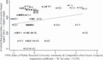
{kind=link}
Figure 4. Correlation between US universities’ output and an index of their 1950s autonomy and competition Notes: The figure shows the Shanghai ranking of each US state’s major research university and also shows the 1950s autonomy and competition index (from factor analysis) for that state’s research universities. The coefficient estimate and p-value shown in parentheses are from a univariate linear regression of the ranking on the 1950s autonomy and competition index. For US state abbreviations, see notes to Figure 3.
{kind=link}
Of course, none of the correlations that we have shown so far are evidence that having greater autonomy and competition causes a university to have higher output. Figure 4, which relates recent output rankings to 1950s AC indices makes the possibility of strict reverse causality remote, but the possibility remains that both the rankings and AC indices are caused by some third factor which does not change much over time within a state.
2.5. Correlations between university output and individual indicators of university autonomy and competition
We now report the correlations with output for a few of the most interesting individual proxies for university autonomy and competition. (The variables we examine were all elements in the factor analysis.)
We regressed European university rankings on the degree to which the government controls the university’s budget. The estimated coefficients indicate that the average Shanghai ranking for a university that must get its budget approved by the government is just above 200, but the average ranking for a university that does not need budget approval is 316. These rankings are statistically significantly different (p-value of 0.006).
We also regressed European university rankings on the variable that indicates whether all faculty with the same seniority and rank must receive the same pay. The resulting estimates indicate that universities that must pay the same amount to all such faculty have an average Shanghai ranking of 213. Universities free to pay different amounts have an average ranking of 322. These rankings are statistically significantly different (p-value of 0.002).
Our regression of European university rankings on whether a university controls its baccalaureate student selection indicates that controlling student selection is associated with a very large 156 rank points (statistically significantly different from zero with a p-value of 0.002).
Another regression indicates that each percentage of a European university’s budget that is from core government funds is associated with a decrease of 3.2 rank points (p-value of 0.004) in its Shanghai Index. We suspect that the empirical reality of getting most of one’s budget from the government is as good an indicator of control than the answer to a survey question about whether the government must approve one’s budget.
Yet another regression shows that each percentage of a European university’s budget from competitive grants is associated with an increase of 6.5 rank points (p-value less than 0.001) in its Shanghai index. However, we cannot interpret this correlation easily. The competitive grant measure partly reflects a country’s institutional environment and is partly endogenous to a university’s success. Clearly, if a country offers few research grants in competitions, the research grant percentage will be low. However, if a university is routinely unsuccessful in grant competitions, its budget share from competitive grants will be low even if its country offers generously staked grant competitions. We solve this problem in Section 5, where we rely on variation in the competitive research grant stakes that is exogenous to any given university. For now, it may be helpful to know that if we regress a university’s ranking on its country’s average percentage of university budgets from competitive grants, we obtain a positive and statistically significant correlation.
We ran similar regressions for the US and found similar correlations. For instance, we regressed the rankings for US states’ top public universities on the degree to which faculty with the same salary and rank must be paid identically (‘salary inflexibility’). (We scaled the measure of salary inflexibility to have a mean of zero and a standard deviation of one.) A one standard deviation increase in salary inflexibility is associated with a ranking that is 68.5 places lower (p-value of 0.002).
As another example, we regressed the US universities rankings on the percentage of their budget that depends on competitive grants. Each percentage of dependence on competitive grants is associated with 5.4 rank points (p-value of 0.021) on the Shanghai index. Keep in mind, however, that the competitive grant measure is problematic because it is somewhat endogenous to a university’s success. This is addressed in Section 5.
2.6. Field-specific output and university autonomy and competition
As noted above, the Shanghai index is based heavily on a few science and mathematics indicators. The HEEACT field scores for universities are more broadly based. In particular, they are available for engineering and the social sciences, two areas neglected by the Shanghai index. In this section, we report on the results of regressions in which universities’ scores in separate fields (the natural sciences, engineering, the life sciences, the social sciences) are the dependent variables. The autonomy and competition indices are the independent variables. We show that the field-specific scores are individually correlated with autonomy and competition, in both Europe and the US. We present this evidence to demonstrate that correlations between university productivity and autonomy and competition are not an artefact of one field, such as the natural sciences.
Regression estimates indicate that one standard deviation in European university autonomy and competition is associated with 4.66 points in natural science (about half a standard deviation in this output), 4.36 points in engineering (slightly less than half of a standard deviation in this output), 5.29 points in social science (about half a standard deviation in this output), and 5.44 points in life science (about half a standard deviation in this output. These estimates are all statistically significantly different from zero with p-values of less than 0.001.
Furthermore, regression estimates indicate that a standard deviation in US public university autonomy and competition is associated with 4.62 points in natural science (about half a standard deviation in this output), 2.27 points in engineering (about a quarter of a standard deviation in this output), 3.27 points in social science (about a third of a standard deviation in this output), and 2.95 points in life science (about a third of a standard deviation in this output). The correlation for US engineering is not statistically significant. However, all of the other correlations mentioned above are (p-values less than 0.10).
In short, we find that the associations between the AC index and research productivity are very consistent across fields. (We have so far not been able to examine output in the arts, but our causal analysis will suggest that higher productivity in the arts is also associated with greater autonomy and competition.) The evidence thus suggests that the correlations are capturing something general about universities, not something peculiar to how the productivity indices are computed.
2.7. Summing up the correlational evidence
Universities’ autonomy and competition, which appear in practice as a package, are clearly related to universities’ output. It remains to be seen whether the relationship is causal. We draw confidence from the similarity of the correlational evidence from Europe and the US. Despite differences in institutions, laws, culture, and our data gathering methods, there are clear commonalities such as salary inflexibility and a university’s need for government budget approval being negatively correlated with output.
3. An empirical strategy for obtaining credibly causal evidence on the effects of autonomy and competition
- Top of page
- Summary
- 1. Introduction
- 2. Correlations between university autonomy and university output
- 3. An empirical strategy for obtaining credibly causal evidence on the effects of autonomy and competition
- 4. The effects of autonomy and competition on the output from a given educational expenditure
- 5. Competition for research grants
- 6. Lessons for europe
- 7. Conclusions
- Discussion
- References
- Appendix
Suppose that a more autonomous university with a greater need to compete for resources makes better use of every dollar of funding. Then, greater autonomy and greater competition would generate higher output all else equal. In other words, a sufficient condition for autonomy and competition generating greater performance is that they enhance the return to any given investment in the university. We would like to test this sufficient condition. We cannot do so in a strict sense because there are dollars of funding that are always inframarginal and therefore do not vary so that we could test their returns. However, we can test the output generated by exogenous changes in marginal funding, and this is what we do in this section.
How do we identify exogenous variation in universities’ funding? Subsection 3.2 explains the political instruments that we use. They are the most important element of our empirical strategy.
3.1. The basics
Apart from the instruments, our estimation strategy is a fairly transparent attempt to estimate, in reduced form, how a state’s 1950s AC index, its percentage of universities that are private, and its proximity to the technology frontier, affect the number of patents it produces for a given expenditure on education. In simplified form:
- 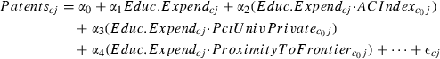
There are numerous control variables represented by the ellipses, and Educ.Expend is, in fact, a vector of expenditures for each type of education. We will return to these details later. What is important is that the effect of a given expenditure on education is allowed to vary with the AC index, the percentage of universities that are private, and proximity to the technological frontier (as in Aghion et al., 2005).
We construct a panel dataset organized by state (the j index on the above variables) and birth cohort (the c index on the above variables). The state-by-cohort structure is essentially a transformation of state-by-year data, where we take account of the fact that a birth cohort X is typically in first grade in year X + 6, in second grade in year X + 7, and so on up through graduate school. Our first birth cohort was born in 1947 and our last was born in 1973. (We do not go beyond the 1973 birth cohort because we wish to observe each cohort’s adult outcomes.)
For instance, to construct the educational expenditure variables for each cohort, we obtain panel data on all US educational institutions, from primary schools up through research universities, both public and private. Then, we make computations so that we can say that A dollars per person were spent on research university education for, say, the 1947 Oklahoma birth cohort, B dollars per person were spent on their 4-year college education, C dollars on their 2-year college education, and D dollars on their primary and secondary school education. It is important to note that all of the expenditures are measured per person in the cohort, rather than per-person who enrols in that type of education. This is because enrolment is potentially endogenous to expenditures. Thus, an expenditure of $1000 per person in the cohort on research education may sound modest but it is likely to represent a very expensive education for the few percent of people who enrol in doctoral education at a research university.
Patents are the patents produced by residents of state j when its cohort c is aged 26--35, the key ages for research-educated residents to work as post-docs, in laboratories, and in high-technology jobs. We chose patents as one of our outcomes because they are tightly linked to research education,12 they record the likely economic impact of research, and they are a cardinal measure.
Although the above equation is written with patents as the outcome variable, we will also use research publications in an otherwise identical equation. Publications are the research publications produced by residents of state j when its cohort c is aged 26 through 35. We focus on publications in the natural sciences, engineering and the arts because the data are fairly consistent for these fields over time. While patents are recorded by one authority in exactly the same way over time, the indexing of publications (especially information on authors’ location) is done by many publishers in ways that have changed somewhat over time. Thus, even though the ISI Web of Knowledge (2009) gathers the publication information from publishers in a consistent way, publications are a noisier indicator of research productivity than patents are.13
All three of the interaction variables are recorded as early as possible -- 1957 for the AC index, 1960 for percentage of universities that are private, and 1960 for proximity to the frontier. We then interact only these earliest recorded levels, which is why the variables are indexed by c0 in the equation. We use only the earliest recorded levels because we wish to avoid reverse causality that might occur if, for instance, a state’s patenting success moved it closer to the frontier, induced the government to give its universities more autonomy, and so on. All of our early-recorded interaction variables greatly predate the era in which our earliest birth cohort (1947) could possibly have themselves affected patents, public university autonomy and competition, the percentage of universities that are private, or proximity to the technological frontier.
The percentage of colleges and universities that are private is self-explanatory. We have already described the AC index: the first principal factor from a factor analysis of the Moos and Rourke (1959) governance variables. Note that we interact the AC index for research universities with research university expenditures and the AC index for 4-year and 2-year colleges with those colleges’ expenditures.
Proximity to the technological frontier can be measured in one of a few ways, all of which tend to produce similar results. Here we use per worker labour earnings in the state divided by per worker labour earnings in the state with the highest such earnings. Proximity to the frontier thus tops out at 1. In practice, the states far from the frontier have proximity of about 0.5.
To ensure that we do not confound our variables of interest with state-specific omitted variables that are fairly constant across time, time-specific omitted variables that are fairly constant across states, or state-specific time trending variables, all of our estimations control for a full set of state indicator variables, cohort indicator variables (equivalent to year indicator variables), and state-specific linear time trends. These are some of the variables represented in the ellipses in Equation (1). The remaining variables represented by the ellipses are political, and the need for them will become clear when the instruments are explained.
3.2. Instrumental variables for educational expenditures
We need instrumental variables for educational expenditures because it is likely that they are simultaneously determined with other outcomes for a state and time. Most worrisome would be some unknown, third factor (not captured by time effects or state-specific linear time trends) that cause a state to invest more in education over time and also become more inventive. For instance, if there were an exogenous increase in the demand for inventive goods, people might be induced to engage in more patenting and policy-makers might be inclined to support more educational expenditures, simply because they believed that education caused invention (even if it did not).
As instruments, we require variables that shift educational expenditures among states and over time in arbitrary ways unrelated to other determinants of patenting. We find such instruments in the politics of legislative committee assignment. It is easiest to illustrate how the instruments work by starting with an example for federal educational expenditures, all of which are directed to research universities.
In the US House of Representatives and Senate, the Appropriations Committees control the allocation of federal funds to projects. Most research funds for universities are awarded through a competitive process, so that the Appropriations Committees simply allocate a lump sum to agencies like the National Science Foundation. The agencies then disburse the money using merit-based research competitions. However, the Appropriations Committees can also propose that certain individual projects be funded without regard to merit or larger policy considerations. These are called earmarks. It is well known that members of Congress use earmarks to pay back their constituents for support, resulting in so-called pork-barrel spending. A seat on the Appropriations Committee is valuable precisely because it allows members of Congress to deliver pay back to their constituents. Now, many forms of spending are formula-based and are, therefore, inefficient ways to channel spending to one’s constituents. For instance, a congressman may have numerous Medicare recipients (elderly people who rely on the federally funded medical plan), but it would not be efficient for him to pay them back by raising Medicare spending. This is because he could only increase the generosity of the Medicare formula, and most of the increased generosity would go to people outside his constituency. There are only a couple of ways that most legislators can send money to their constituency and only their constituency. The first is earmarking funds for research at an institution located in the constituency. The second is earmarking funds for a particular bridge or similar infrastructure project located in the constituency.14Aghion et al. (2005) provide case studies of particular legislators who, upon becoming Appropriations Committee members, directed billions of dollar to research universities in their constituency, building laboratories, medical schools, and other research facilities.
Because a seat on the Appropriations Committee is so valuable, a legislator who has one does not give it up voluntarily. Both houses of Congress respect an incumbent committee member’s right to continue on this committee. Thus, once on, a legislator tends to stay on the committee for several years, and nearly all vacancies arise because a member has died in office or retired from legislative political life (through old age or being appointed, say, to the President’s cabinet). In any case, a vacancy sets off a complex political process that generates our instruments. Although the process is not written down formally, political scientists and our own work have determined the implicit process to be roughly as follows. When a vacancy arises, each party (Democrat and Republican) considers the resulting state composition of the committee within its party and whether that composition matches the state composition of its party members in its house of Congress. Thus, if when the vacancy occurs, Florida’s Democratic legislators occupy 5% of the Democratic committee places but Florida Democrats make up 10% of the Democrats in the house, Florida has a representation gap of 5%. The state with the largest gap is very likely to fill the vacancy, and political custom is such that the most senior, eligible legislator from the state is very likely to be the new committee member. (To be eligible, a legislator must not be on the committee already or occupying a high ranking seat on one of a couple of other very powerful committees.) Now, if vacancies arose very regularly (for instance, if legislators never served more than one term), then the state and party composition of the Appropriations Committee would always be a mirror image of the Congress. But, in fact, incumbent legislators (especially multi-term incumbents) usually win elections in the US because campaign finance, the drawing of election districts, and other phenomena make them likely to defeat challengers in an election. Since an incumbent legislator keeps his seat on the committee, the committee can become very imbalanced over time. For instance, consider Massachusetts, which shifted from being a bi-partisan state to a mostly Democratic state. It had a couple of incumbent Republican legislators on the Appropriations Committee. As its party preferences shifted, these incumbents kept their committee seats even while the Democratic party – through the process described above – was obliged to appoint Massachusetts Democrats to the committee. Thus, Massachusetts ended up with much more representation on the Appropriations Committee than the state’s population warranted. Of course, for every lucky state like Massachusetts that is in the right place at the right time and becomes over-represented, there is an unlucky state that becomes under-represented.
The bottom line is that the process of vacancy-filling is complex because it depends in a highly path-dependent way on every state’s political history, not just on the current state of affairs in the state whose legislator ends up filling the vacancy. The enormous path dependence in the process creates strange lotteries where, for instance, Massachusetts is lucky and another state is unlucky. Thus, our instruments – which are the interaction between the arrival of a vacancy and within-party state gap in committee membership at the moment the vacancy arises – generate variation in states’ representation on the Appropriations Committee and, consequently, variation in federal funding for states’ educational institutions. It is not plausible that, through some other channel, these instruments directly affect the tendency of the state’s residents to generate patents.
The federal instruments just described provide the crucial, arbitrary shocks to the expenditure of research universities. (Remember that these arbitrary funds are in addition to whatever the research universities might earn through merit-based competitions for federal funding.) However, federal funds are sent only to research universities, not 4-year colleges. Thus, we need different instruments for them. We turn to the politics of state legislatures since it is they that determine government funding for 4-year colleges. We again exploit the arrival of vacancies on legislative committees -- this time the chairs of the state senate’s appropriations and education committees.15 We rely on changes in the higher education institutions that are located in the chairperson’s constituency when that chair changes hands. This is best illustrated with an example. Suppose that state senator X whose constituency included a public 4-year college retires from chairing his/her senate’s appropriations or education committee. Suppose that X is replaced by a senator whose constituency does not include a 4-year college. Empirically, we see government funding shift from government funding from 4-year colleges toward different spending areas, which may include 2-year colleges. We do not claim that it is random that a senator is made a committee chairperson, but we do not think that the change in the specific colleges located in the chairperson’s constituency is likely to affect patenting except through the channel of chairperson-generated shocks to state funding for specific colleges. To be precise, our instruments are the number of enrolled students at each type of college (public 4-year, private 4-year, public 2-year, private 2-year) in the chairperson’s constituency. We use 1960 enrolment (the earliest available) for all cohorts. Thus, the instruments change only because the chairperson changes. They do not reflect the ongoing success of a college, something that could be endogenous to a chairperson’s generosity with public funds.16
We have asserted that our political instruments do not reflect contemporary federal or state politics in such a way that they might affect patents through a channel other than expenditure. But, is our assertion true? We test it by controlling for several variables designed to pick up contemporary politics, both for state elections to federal positions and for local elections to state positions. These include the Democratic vote share of a state’s delegation to Congress over the period a cohort would normally pursue doctoral education, the Democratic vote share for a state’s legislature over the period a cohort would normally pursue 4-year college education, the same vote share over the period a cohort would normally pursue 2-year college education, and the same vote share over the period a cohort would normally pursue primary and secondary education. We also include parallel variables for the Independent vote share -- that is, the share of votes for candidates who are neither Democrats nor Republicans.
3.3. Summarizing and extending the empirical strategy
We are now in a position to summarize our empirical strategy. Intuitively, we see whether an arbitrary expenditure shock to a state’s research university funding and four-year college funding has an effect on a state’s patenting over the period when the cohort who receives the shocks is most likely to be contributing to professional research that generates economic returns. We see whether that effect varies with the autonomy of the state’s institutions of higher education, the state’s percentage of colleges and universities that are private, and the state’s proximity to the technological frontier. Because the political circumstances that generate the shocks tend to last about 6 years, a cohort may experience the full impact of a shock or only part of one.
Formally, we identify the effects of educational expenditures on patenting from within-state, within-time, within-state-linear-time-trend variation. Using instruments, we identify the local effects of variation in expenditure generated by variables that predict Appropriations Committee membership (federal funds for research university expenditure) or variables that describe the colleges in the constituencies of state senate chairs of appropriations or education committees. We control for contemporary politics. We estimate robust standard errors clustered at the state level to account for the fact that adjacent birth cohorts have overlapping educational experiences.
In equations, this strategy’s main (second-stage) specification is:
- 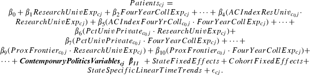
There is a parallel equation for each publications measure. The first-stage equations are:
- 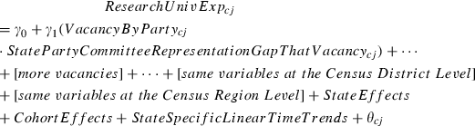
and
- 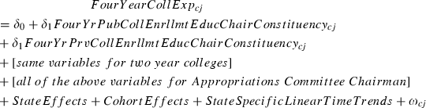
and an equation parallel to the one above for 2-year college expenditures.
3.4. Competitive research stakes
A logical question is whether we expect universities to use the politically generated increases in expenditure as they would use other exogenous increases in expenditure. We believe that the answer is yes, for two reasons. First, although the politically generated expenditures look different to an outsider, they look like any other government funding to university insiders. Second, universities can spend the politically generated expenditures on a project they choose. A legislator does not get funds for his universities and then impose projects upon them. He must get the appropriation for a specific project that the university itself proposes. Third, and perhaps most important, the politically generated expenditures we study are large enough to generate interesting variation but they are not large relative to inframarginal spending. Thus, if a university is in the habit of spending research funds efficaciously, it is likely to spend the exogenous increase efficaciously, and vice versa.
We take account of this last fact to test whether universities use their exogenous increases in expenditure better if, for their inframarginal research funds, they need to compete in high stakes, merit-based competitions. The stakes in research fund competitions vary with the total size of the ‘pot’ established by the federal government. We show below that this varies substantially and non-monotonically over time. To test whether the stakes matter, we estimate a version of Equation (2) in which the research university expenditure variables are interacted with the federal competitive research stakes for the relevant years.
4. The effects of autonomy and competition on the output from a given educational expenditure
- Top of page
- Summary
- 1. Introduction
- 2. Correlations between university autonomy and university output
- 3. An empirical strategy for obtaining credibly causal evidence on the effects of autonomy and competition
- 4. The effects of autonomy and competition on the output from a given educational expenditure
- 5. Competition for research grants
- 6. Lessons for europe
- 7. Conclusions
- Discussion
- References
- Appendix
Descriptive statistics for the variables we use in our estimation may be found in Table A2 in the Appendix. Notes to our tables also provide key information on data sources. However, the data sources for our instrumental variables are so numerous and complex that we refer the reader to the Data Appendix. Keep in mind that all variables in the causal analysis, except the AC index, reflect both public and private institutions. For instance, expenditure of research universities includes private research universities and patents include all those produced in the state, regardless of the institution with which their author is associated.17
| Mean | Std.dev | |
|---|---|---|
| ||
| Patents per person | 0.592 | 0.828 |
| Publications per person in the arts | 0.150 | 0.126 |
| Publications per person in engineering | 0.458 | 0.481 |
| Publications per person in the natural sciences | 1.544 | 1.461 |
| Expenditure (thousands) on research universities per person in the cohort | 1.818 | 1.853 |
| Expenditure (hundreds) on 4-year colleges per person in cohort | 21.151 | 28.308 |
| Expenditure (hundreds) on 2-year colleges per person in cohort | 11.431 | 22.916 |
| AC Index for research universities | 0.000 | 1.000 |
| AC Index for colleges | 0.000 | 1.000 |
| %Universities Private | 0.191 | 0.236 |
| Proximity to the Frontier | 0.661 | 0.065 |
| %Democratic vote for US President | 42.124 | 6.897 |
| %Other (non-Democratic, non-Republican) vote for US President | 6.618 | 6.260 |
| %Democratic vote for US House of Representatives | 51.066 | 11.008 |
| %Other (non-Democratic, non-Republican) vote for US House of Representatives | 2.363 | 5.480 |
| %Democrats in state legislature’s upper house for 4 years starting now | 59.980 | 21.217 |
| %Democrats in state legislature’s lower house for 4 years starting now | 59.837 | 20.317 |
| %Democrats in state legislature’s upper house for 2 years starting now | 60.132 | 21.739 |
| %Democrats in state legislature’s lower house for 2 years starting now | 60.016 | 20.760 |
| %Democrats in state legislature’s upper house for 13 years starting now | 61.052 | 22.424 |
| %Democrats in state legislature’s lower house for 13 years starting now | 61.166 | 21.280 |
| Federal budget (billions) for research and development through the National Science Foundation, National Institutes of Health, and National Aeronautics and Space Admin. | 9.771 | 2.628 |
Table 1 presents the main results of the causal analysis: the coefficients from estimating the above second-stage equation by instrumental variables. Because the equation includes several interaction terms that, in practice, covary, it is best to focus on the signs of coefficients, rather than their magnitudes, when reading the table. We use figures to interpret the magnitude of the coefficients.
The two top rows of the table show that the main effects of expenditures on research universities and 4-year colleges are respectively negative at zero autonomy and competition, zero per cent of universities private, and zero proximity to the technological frontier. However, low values of proximity are about 0.5. Therefore, the negative signs of the first coefficients should simply be taken as an indication that it is possible to waste money on research universities and 4-year colleges. If a state were to spend funds on them without regard to their governance or the need for their output, the state would presumably discourage real economic activity and probably discourage patenting as well.
The coefficients of the variables interacted with the AC index are of primary interest. (Note that the main effect of the AC index does not appear because the index is constant within a state over time and is therefore absorbed by the state indicator variable.) Recalling that the AC index has mean zero and standard deviation 1 by construction, we see that research universities with above average autonomy and competition generate more patents for any given expenditure. Similarly, 4-year colleges with above average autonomy and competition cause more patents for any given expenditure.
Next, consider the coefficients of the variables interacted with the percentage of universities that are private. (The main effect of per cent private is absorbed by the state indicator variable.) The percentage of universities that are private has a mean of 0.19 and standard deviation of 0.24. We see that the existence of local private colleges and universities, which presumably fosters competition between the private and public sectors, makes research universities generate more patents for any given expenditure. It also makes 4-year colleges generate more patents for any given expenditure.
Finally, the coefficients indicate that, as expected, proximity to the frontier makes the effect of expenditures on patents greater for research and 4-year college education. As in Aghion et al. (2005), the logic of this is that areas close to the frontier are likely to generate technological innovations if research education increases.
It is very difficult to interpret the coefficients in Table 1 in a manner that tells us much about policy. This is because the three interaction variables covary significantly. Thus, if we want to understand the implications of the results, it is best to show what they imply for actual states. We show these implications in Figures 5 and 6. To construct each figure, we take each state’s actual value of each interaction variable and we multiply it by the appropriate coefficient and then sum all the products. For instance, to generate the Alabama bar in Figure 5, we multiply Alabama’s AC index by 0.029, multiply its percent private universities by 0.081, and multiply its proximity to the frontier by 0.247. We then add these products to the base coefficient of --0.174. By doing this for every US state, we hope to give readers a sense of the likely range of effects of educational expenditures on patenting.
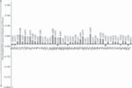
{kind=link}
Figure 5. Effect of a $1000 investment in US research universities on patents per person Notes: The figure shows the effect of $1000 investment in research universities per person in the cohort. The figure is based on the regression estimates shown in Table 1. For US state abbreviations, see notes to Figure 3.
{kind=link}
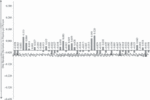
{kind=link}
{kind=link}
Figure 5 shows that half of the states generate more patents when expenditure on their research universities increases. The states that generate the most patents per dollar of exogenous expenditure are those with high university autonomy, a high percentage of universities that are private, and close proximity to the frontier. In New Jersey, for instance, $1000 in research university expenditure per person in the cohort increases patenting by residents of that state by 0.126 standard deviations. The estimated effects are also high for California, Illinois, Massachusetts, Maryland, Michigan, Minnesota, Missouri, New Hampshire, New York, Vermont and Wisconsin. (It should mentioned that Massachusetts and New Hampshire may be somewhat conflated because the belt of high technology jobs in the outskirts of Boston, Massachusetts spills over into southern New Hampshire.) In contrast, it appears that expenditures on research universities do not increase (or possibly even decrease) patenting in states with low university autonomy, a low percentage of universities that are private, and considerable distance from the frontier: Alabama, Arkansas, Kansas, Kentucky, New Mexico, Nevada, Oregon, South Carolina and West Virginia. We should emphasize that all of these predictions contain error so that policy-makers should not take their own state’s coefficient very seriously. (Their state might be anomalous.) However, one can take seriously the overall range of effects, from very positive in states like New Jersey to a waste of expenditure in states that do not have university autonomy, competition from private universities, or close proximity to the frontier. While a policy-maker might not be able to change his state’s proximity, he could make changes to the autonomy of public universities and promote competition between his states’ public universities and other institutions.
Figure 6 shows that the vast majority of states generate more patents when expenditure on their 4-year colleges increases. Nevertheless, the size of the positive effect varies substantially. The states that generate the most patents per dollar of exogenous expenditure are those with high university autonomy, a high percentage of universities that are private, and close proximity to the frontier. For instance, a $100 increase in 4-year college expenditure per person in the cohort would increase patenting by residents by 0.08 to 0.10 of a standard deviation in California, Connecticut, Florida, Illinois, Massachusetts, New Jersey and New York. The effect of the same $100 increase in 4-year college expenditure would likely not increase (and might even decrease) patenting in states like Alabama, Arkansas, Maine and a few others. It is important to understand that variation in expenditure on 4-year college education per person in the cohort is much smaller than variation in expenditure on research university education. The expenditure is also used quite differently in 4-year colleges versus research universities -- for instance, only research universities support the vast ‘wet’ laboratories where most life science and some chemistry work is done. Four-year colleges are more likely to contribute to research in mathematics, statistics and so on. Thus, we do not expect that the effects of expenditures will be the same for research universities and 4-year colleges, nor would one conclude that the two types of institution substitute for one another to any great degree.
The estimated effects shown in Table 1 are not sensitive to a number of changes in the specification. For instance, if any one or even two of the interaction variables is dropped from the equation, the coefficients retain the same signs (although magnitudes of course change because of the covariance among interaction variables). Excluding the contemporary political variables has essentially no effect on the coefficients, which is what we expect if the instruments are legitimate. Shifting to a different measure of proximity to the frontier also has little effect on the coefficients.
Table 2 shows results using publications, rather than patents, as the measure of output. Focusing on the interaction terms, which matter most for interpretation, we see that research universities with above average autonomy and competition generate more publications in all three fields for any given expenditure. Similarly, 4-year colleges with above average autonomy and competition cause more patents for any given expenditure.
| Dependent variable: Publications per person in... | |||
|---|---|---|---|
| the arts | engineering | hard sciences | |
| Coeff. (std.err.) | Coeff. (std.err.) | Coeff. (std.err.) | |
| |||
| Expenditure (thousands) on research universities per person in the cohortb | −0.004 (0.011) | 0.023 (0.017) | −0.094 (0.043) |
| Expenditure (hundreds) on 4-year colleges per person in cohortb | −0.009 (0.005) | 0.012 (0.006) | 0.021 (0.018) |
| AC Indexc · Exp. (thousands) on research universities per person in cohort | 0.003 (0.001) | 0.012 (0.004) | 0.020 (0.008) |
| AC Indexc · Exp. (hundreds) on 4-year colleges per person in cohort | 0.001 (0.001) | 0.002 (0.001) | 0.002 (0.002) |
| %Universities Privated · Exp. (thousands) on research universities per person in cohort | 0.002 (0.005) | 0.003 (0.008) | −0.021 (0.026) |
| %Universities Privated · Exp. (husbands) on 4-year colleges per person in cohort | −0.007 (0.002) | −0.005 (0.002) | 0.021 (0.007) |
| Proximity to the Frontiere · Exp. (thousands) on research universities per person in cohort | 0.009 (0.017) | 0.036 (0.026) | 0.159 (0.065) |
| Proximity to the Frontiere · Exp. (hundreds) on 4-year colleges per person in cohort | 0.019 (0.007) | −0.014 (0.008) | −0.030 (0.020) |
| Contemporaneous political variablesf | Yes | Yes | Yes |
| State indicator variables, cohort indicator variables (equivalent to year indicator variables) | Yes | Yes | Yes |
| State-specific linear time trends | Yes | Yes | Yes |
The coefficients on the variables interacted with the percentage of universities that are private are somewhat less consistent. We believe that this is because the publications measures are noisier than the patent measure. For instance, we see that the point estimates suggest that the existence of local private colleges and universities makes research universities generate more publications in the arts and engineering, but these effects are not statistically significantly different from zero. The point estimate for hard sciences is negative, but it is also not statistically significant. The estimates for 4-year colleges are also inconsistent: they are all statistically significant but are a mix of negative and positive signs.
The coefficients on the interactions with proximity to the frontier indicate that proximity makes the effect of expenditures on publications greater for research universities. However, the effects are mixed for expenditures on 4-year college education.
Overall, we conclude that the evidence supports the hypothesis that autonomy, competition, and proximity to the frontier enhance the productivity of expenditures by research universities, where productivity is measured by publications across a few main fields. However, the picture is more mixed for 4-year colleges, and this may be because they affect research publications in an indirect way and the publications measure is already noisy.
We use Figure 7 to illustrate how to interpret the coefficients in Table 2. It is constructed in exactly the same manner as Figure 5. Figure 7 shows that all states generate more publications in engineering when expenditure on their research universities increases. The states that generate the most publications per dollar of exogenous expenditure are those with high university autonomy, a high percentage of universities that are private, and close proximity to the frontier: California, Colorado, Maryland, Minnesota, New Hampshire (conflated with Massachusetts), New Jersey and Vermont. The states that generate the fewest publications per dollar of exogenous expenditure have low university autonomy, a low percentage of universities that are private, and considerable distance from the frontier: Kansas, Oregon, Rhode Island and West Virginia. Although each state’s coefficient is of course a prediction that contains error, the overall range of effects is interesting: expenditures are more than twice as productive in states with the most autonomy and competition, compared to states with the least.
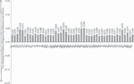
{kind=link}
Figure 7. Effect of a $1000 investment in US research universities on engineering publications per person Notes: The figure shows the effect of $1000 investment in research universities per person in the cohort. The figure is based on the regression estimates shown in Table 2. For US state abbreviations, see notes to Figure 3.
{kind=link}
Summing up, it appears that autonomy and competition cause research universities to produce more output, measured in patents or publications, for given increase in expenditure. The results are similar, though somewhat less consistent, for 4-year colleges. Overall, the estimates strongly suggest that the correlations we saw between university output and measures of autonomy in Section 2 were in fact the expression of a causal relationship. If the relationships are causal, as we would now like to suggest, then policy-makers are not without options. They can improve the output of their research universities and baccalaureate institutions by giving them greater autonomy and making them compete for resources, faculty and students. The results for states close to and far from the technological frontier suggest that such policy changes will produce the greater positive effect on universities’ output in areas that are close to the technological frontier.
5. Competition for research grants
- Top of page
- Summary
- 1. Introduction
- 2. Correlations between university autonomy and university output
- 3. An empirical strategy for obtaining credibly causal evidence on the effects of autonomy and competition
- 4. The effects of autonomy and competition on the output from a given educational expenditure
- 5. Competition for research grants
- 6. Lessons for europe
- 7. Conclusions
- Discussion
- References
- Appendix
If very little money is attached to merit-based competitions for research grants, universities are unlikely to invest much in preparing for such competitions. If the funds associated with winning a competition are small, universities may find that there are easier ways to get funds than delivering the most promising project. For instance, a university might prefer to spend its effort courting politicians. Thus, we expect that when the stakes of research grant competitions are greater -- that is, when universities’ funding depends more on their performance in these competitions -- universities will invest in preparation that allows them to make better use of research funds. We attempt to test this hypothesis in this section.
Figure 8 shows federal research and development obligations through the three agencies that dominate the merit-based competitions in which universities compete: the National Science Foundation, the National Institutes of Health and the National Aeronautics and Space Administration.18 We see in Figure 8 that the stakes of federal merit-based grant competitions were negligible from 1951 through about 1960. There was thereafter a boom in the stakes of such competitions, with the late 1960s being the high water mark: $23 billion real dollars per year at the peak. The stakes fell from this peak until 1982, when they were just over $5 billion in real dollars. Since then, the stakes have risen (with the notable exception of the year 2000) to about $12 billion in real dollars. Fortunately, this time pattern for the stakes is so non-monotonic that it could not be confounded with any number of other trends that affect research universities, such as private philanthropy, rising incomes, and the like. Therefore, we believe that we can test the effect of higher stakes in research competitions on how productively universities use exogenous increases in funding. Intuitively, if a university is in the habit of preparing research projects well because it needs to win competitions, does that university make better use of an exogenous increase in research funding?
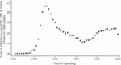
{kind=link}
Figure 8. The US federal research and development budget for merit-based grants Notes: The figure shows the research and development budget for grants administered by the National Science Foundation, the National Institutes of Health, and the National Aeronautics and Space Administration. These are the three agencies that are the key source of competitive research grants for universities. The budget is shown in real 2008 dollars.
{kind=link}
Table 3 shows results of estimating a version of the second stage equation in which research university expenditures are interacted with the stakes in federal competitions for research grants. The stakes are also interacted with expenditures times autonomy and with expenditures times percent private. (The main effects of the federal stakes are absorbed by the cohort fixed effects.) Again, focus on signs; we use a figure to interpret magnitudes. Higher stakes make research university expenditures generate a greater number of patents, all else equal. Higher stakes also improve the effects of autonomy and improve the effects of a higher percent private. All these coefficients are highly statistically significant.19 These results suggest that autonomy and market competition improve universities’ research output more when those universities can see that research effort is richly rewarded through merit-based competitions. In other words, policy-makers may have a role to play by focusing universities’ competition on research, as opposed to politics or other activities. Universities are induced to use their autonomy productively when they operate in a high stakes, competitive research environment.
| Dependent variable: Patents per person in the state (higher education investment variables are instrumented, see notes) | Coeff. (std.err.) |
|---|---|
| |
| Expenditure (thousands) on research universities per person in the cohortb | −0.182 (0.067) |
| Expenditure (hundreds) on 4-year colleges per person in cohortb | −0.109 (0.022) |
| AC Indexc · Exp. (thousands) on research universities per person in cohort | −0.030 (0.014) |
| AC Indexc · Exp. (hundreds) on research universities per person in cohort | 0.003 (0.001) |
| %Universities Privated · Exp. (thousands) on research universities per person in cohort | −0.207 (0.042) |
| %Universities Privated · Exp. (hundreds) on 4-year colleges per person in cohort | 0.010 (0.010) |
| Proximity to the Frontiere · Exp. (thousands) on research universities per person in cohort | 0.266 (0.100) |
| Proximity to the Frontiere · Exp. (hundreds) on 4-year colleges per person in cohort | 0.192 (0.029) |
| Competitive Research Grants (billions)g · Exp. (thousands) on research universities per person in cohortb | 0.0002 (0.001) |
| Competitive Research Grants (billions)g · AC Indexc·Exp. (thousands) on research universities per person in cohortb | 0.003 (0.001) |
| Competitive Research Grants (billions)g · %Universities Privated · Exp. (thousands) on research universities per person in cohortb | 0.026 (0.003) |
| 2-year college variables (same as Table 1) and contemporaneous political variablesf | Yes |
| State indicator variables, cohort indicator variables (equivalent to year indicator variables) | Yes |
| State-specific linear time trends | Yes |
Figure 9 is intended to help with the interpretation of magnitudes. Figure 9 is essentially the same as Figure 5 -- it shows the effect on patents of $1000 of expenditure by research universities in various states. However, in Figure 9, we show the effects for stakes of $10 billion and $16 billion. $10 billion is close to the average for federal research competition over our estimation period. $16 billion is two standard deviations above that average. It may be seen that an exogenous increase in research universities’ expenditure has a much greater effect on patenting when the stakes are $16 billion than when they are $10 billion. For instance, in California, Massachusetts and New Jersey, the effect on patenting more than triples.
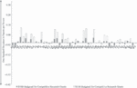
{kind=link}
Figure 9. Effect of a $1000 investment in US research universities on patents per person, allowing the effect to depend on the competitive grants environment Notes: The figure shows the effect of $1000 investment in research universities per person in the cohort, with the effect allowed to vary with the competitive grants environment (as shown in Figure 8). The figure is based on the regression estimates shown in Table 3. For US state abbreviations, see notes to Figure 3.
{kind=link}
Before concluding that higher stakes in research competitions improve the output of universities, we need to sound a note of caution. We have not tried to explain why the stakes varied over time as they did. While most of the popular explanations, such as the American desire to match Russia’s Sputnik spacecraft, would probably not affect our interpretation, we would be concerned if we knew that the federal government raised the stakes when it knew that research was likely to be productive and lowered the stakes when it knew that research was unlikely to do so. However, since we have argued all along that governments do not know much about frontier research (this is why they run competitions rather than simply telling universities what to do), it seems unlikely the federal government would know enough to raise and lower the stakes with the year’s potential for invention.
6. Lessons for europe
- Top of page
- Summary
- 1. Introduction
- 2. Correlations between university autonomy and university output
- 3. An empirical strategy for obtaining credibly causal evidence on the effects of autonomy and competition
- 4. The effects of autonomy and competition on the output from a given educational expenditure
- 5. Competition for research grants
- 6. Lessons for europe
- 7. Conclusions
- Discussion
- References
- Appendix
Our causal analysis on US data strengthens the conclusions we draw from the correlational evidence on both Europe and the US: Autonomy and competition enhance the impact of university funding on research. Our results therefore provide support for policies that promote the package of greater autonomy and greater competition for European universities. This is essentially what we have argued for in earlier work (Aghion et al., 2007 and 2008).
Obviously, European universities depend on private funding to a much lesser extent than American universities. This is both because Europe has a different philanthropic culture and because European universities charge lower student fees. Our survey of European universities revealed that average public core funding made up between 60% and 70% of university budget in all European countries except the UK (35%) and Ireland (38%). In the UK and Ireland, student fees account for a substantial share of the budget (23% and 32%, respectively), while student fees account for no more than 16% of the budget in other European countries. In fact, student fees make up only 3% of German and Swiss universities’ budgets and make up 0% of Scandinavian universities’ budgets.
Moreover, the meaning of the words ‘public’ and ‘private’ as applied to universities is quite different in Europe and the US. European private universities are very much funded and regulated by public authorities; American private universities are not. Indeed, one could argue that some American public universities are more private than some European private universities. Thus, when it comes to the private-public distinction, our US results apply, but in a way that involves issues and subtleties beyond this paper.20
Our other results on autonomy and competition apply readily to Europe because the measures of autonomy and competition are similar for Europe and the US. Our results suggest that universities need to control the use of their budgets, independently choose the compensation of their faculty, and have the freedom to hire whichever faculty they most prefer.
Currently, governance varies substantially among European universities. Most high productivity European universities, such as those in the UK and Sweden, have substantial autonomy and competition on most dimensions. For instance, in our survey of European universities, UK and Swedish universities have high budget autonomy, high hiring autonomy and high wage-setting autonomy (and this despite the fact that Swedish universities are nearly all public). Moreover, Swedish universities have an exceptionally high percentage of their budgets -- 34% -- coming from competitive research grants. (On this criterion, UK universities are -- with a figure of 21% -- closer to the European average of 19%.)
However, as documented in Aghion et al. (2007, 2008), Swiss universities have strong research performance despite having limited autonomy on some dimensions. They have little control over the overall size of their budgets or wage-setting, but they enjoy very substantial hiring autonomy. They use it, along with a high level of public funding, to compete for top researchers from all over the world.
Competition among universities in Europe is stymied by low mobility of students and faculty across countries. To some extent, mobility may be increased by the Bologna process, which is standardizing the curricula and degree requirements of European universities. However, faculty mobility is currently severely limited by the lack of transportability of pension and social security systems across European Union (EU) countries. While a full harmonization of these systems for the whole European labour market is largely out of reach at this time, creating a unified contractual framework whereby a faculty member who moves can immediately benefit from local social systems would be an important step toward greater mobility.
Competition among European universities is also stymied by nationally segmented budgets for research and education. One can, however, see some evolution towards concentrating resources in top research institutions via yardstick competition exercises -- for instance, the research assessment programmes in the UK, Sweden and the Netherlands and the ‘excellence initiative’ in Germany. Such exercises, if generalized in Europe, would likely enhance competition.
Our evidence does not suggest that autonomy per se is a panacea. It seems worthwhile to point this out because some recent reforms seem to be focused on autonomy with little attention to the accountability that arises through competition (or another means). For instance, in France, a recently enacted law, the Loi de Reforme de l’Université, grants extensive powers to university presidents who are themselves elected mainly by the university faculty. While representing an important step towards more autonomy and accountability in the French university system, the law has raised fears of a system that exercises self government without sufficient external discipline. One fear is that excellence does not feature prominently in the selection of presidents and faculty. Another fear is that autonomous universities could decide to collude rather than compete, at the expense of productive research output (as documented for the Netherlands for the period 1980--2000 by Jacobs and Van der Ploeg (2006)).
Our evidence on the complementarity between autonomy and external discipline is particularly telling for the role of competitive grants. Indeed, one important lesson from our analysis is that competition for basic research funding restructures the environment for universities, inducing them to focus on whether their research is compelling and productive. Such a focus motivates them to make strategic choices that improve the efficiency with which they turn research budgets into research results.
Our US results on competition depend on NSF, NIH and NASA research funding. We would argue that it may be important to learn how these agencies organize competition: It is not obvious that any form of competition would work equally well. In this respect, the European institution which most fits the NSF/NIH/NASA model of competition is the recently created European Research Council (ERC). Its mission is to fund bottom-up, frontier research, and it evaluates research on the sole basis of scientific excellence. The ERC often mentions the NSF and NIH as examples of best practice in terms of running research competitions. While basic research has not typically been an EU prerogative (which explains why only 5--6% of the public funding for research in Europe is spent at the EU level), the Seventh Framework Programme (FP7) created the ERC. Its logic was that EU-wide competition for research money represents EU value-added and therefore does not violate the subsidiarity principle.
Our causal analysis demonstrates that, with sufficient autonomy, universities become better at research when the level of funding allocated by merit-based competition is higher. Thus, our findings suggest that raising the ERC budget is likely to be productive. Indeed, with a budget of €7.5 billion for the 2007--2013 FP7 period, the ERC (which is meant to fund all scientific disciplines, from the humanities to the life sciences) only represents about 20% of the NSF budget and a much lower fraction of the NIH budget. Even if the structure of university funding in Europe -- that is, between the member state and EU levels -- is not meant to converge fully to that of the US -- that is, between the state and federal levels -- and even if some of the disciplining effect can come from competition at the national level, increasing the budget of ERC-like institutions seems likely to improve the productivity of European universities through EU-wide competition.
More generally, it seems likely that the differences in expenditure between European and US universities affect their output. We do not offer direct evidence on this point in this paper, but we note that EU countries spend only 1.3% of GDP on institutions of higher education, compared to US spending of 3.3% of GDP. Consequently, additional funding that would be granted as part of a move towards higher autonomy and merit-based competition, could be expected to benefit research output.
7. Conclusions
- Top of page
- Summary
- 1. Introduction
- 2. Correlations between university autonomy and university output
- 3. An empirical strategy for obtaining credibly causal evidence on the effects of autonomy and competition
- 4. The effects of autonomy and competition on the output from a given educational expenditure
- 5. Competition for research grants
- 6. Lessons for europe
- 7. Conclusions
- Discussion
- References
- Appendix
In this paper, we investigate how university governance affects research output, measured by the university rankings, patents, and publications. We start by showing that university autonomy and competition are positively correlated with university output, both among European countries and among US states. We then perform causal tests of a sufficient condition for universities being more productive when they are more autonomous and face more competition. The analysis suggests that autonomy and competition increase the inventive output from a given expenditure by universities. Because governments are unlikely to know what frontier research is most promising, they may run merit-based competitions among universities for research funds. We present evidence that suggests that, by giving more generous stakes for research competitions, governments can make universities use their funding better, use their autonomy better, and respond more productively to local competition.
We note that expenditures at universities do not increase patenting in states that are far from the technological frontier, have low autonomy and competition for public universities, and have little competition from private universities. These three circumstances are a bad package for the productivity of universities.
The most natural overall interpretation of our results is that frontier research is a complex thing that a university can only pursue effectively if it has the discretion to direct resources and researchers towards what it believes are the most promising paths. Universities will put more effort into directing resources well if they know that rewards are allocated based on competition, especially competition that is strictly merit-based.
Our evidence leads us to recommend higher education reforms in Europe, at both the national and EU levels, that combine higher autonomy with higher accountability through greater reliance on competitive grants, enhanced mobility of students and faculty, and yardstick competition exercises such as assessment programmes.
Discussion
- Top of page
- Summary
- 1. Introduction
- 2. Correlations between university autonomy and university output
- 3. An empirical strategy for obtaining credibly causal evidence on the effects of autonomy and competition
- 4. The effects of autonomy and competition on the output from a given educational expenditure
- 5. Competition for research grants
- 6. Lessons for europe
- 7. Conclusions
- Discussion
- References
- Appendix
Bas Jacobs
Erasmus University Rotterdam
The question of the paper is: are more autonomous and competitive universities more productive? And the answer given by the authors is ‘yes’. This is an interesting paper, which raises an important question, and provides novel and policy-relevant results. The authors should be applauded for collecting their own data. Moreover, they use innovative and good instruments for generating exogenous variation in university expenditures. Finally, their empirical findings are very intuitive and plausible.
The first part of the paper presents correlations between autonomy-competition (AC) and output for universities in EU countries and US states. The EU AC variable is measured by first principal component from a factor-analysis on the following variables: (1) no government approval of university budget; (2) freedom to select students; (3) freedom to differentiate wages; (4) control over appointing professors; (5) low endogamy; (6) own buildings; (7) freedom to set curriculum; (8) low share public funding; and (9) large share research grants. The US AC variable is measured in the same way except that (6) and (7) are dropped, since all US universities own buildings and have the freedom to set their own curriculum. The university output measure is the Shanghai-ranking of universities.
Partial correlations between the AC index and university output are positive for both the EU and US (see Figures 2--4). Moreover, partial correlations between some AC variables (used in the AC index) and university output are positive for both the EU and US, but standard errors are quite large, and sometimes correlations are insignificant. The EU correlations are suggestive, but they appear to be driven mainly by the UK (high AC, high output) and, to a lesser extent, Spain (low AC, low output) (see, for example, Figure 2). Hence, the correlations might not be robust to the exclusion of either the UK, or Spain, or both. This could be important because the correlation between the AC indicator and university output could be much weaker or even be absent for continental-European countries. Similarly, analyzing only the highest-scoring US state universities introduces an upward bias if the best-scoring universities are also the ones that produce more output in a more competitive and autonomous environment than average-scoring US universities.
In the second part of the paper the authors estimate whether there are larger causal impacts on university output of increases in government funding for more competitive and autonomous universities in the US. The idea is that universities that are more autonomous face fiercer competition from other, private universities, and are in states closer to the technological frontier that produce more output with the same marginal increase in funding. In this part, the autonomy measure remains the same. Separate analyses are carried out for two university output measures: patents and research publications. Exogenous variations in expenditures are obtained by instrumenting university funding with appointments of politicians in legislative committees deciding on university funding (see also Aghion et al., 2005). The authors show that exogenous increases in funding increases the number of patents if the university is autonomous, if there is a larger fraction of private universities, and if universities are located in states closer to the technological frontier (see Table 1). The effects of university funding on research publications are very similar, although some counterintuitive estimates are obtained: research publications in the arts and engineering appear to decline if there is more competition from other universities (see Table 2). The authors also investigate whether exogenous increases in funding increase university patenting if the stakes (i.e., the total budget research grants from NSF, NIH, and NASA) are larger for research universities. The interactions of the stakes with the interaction terms reveal that higher stakes increase university output more for more competitive and autonomous universities (see Table 3).
Arguably, patents are a too narrow output measure to correctly measure all university outputs. Universities not only produce patents, but also do research, provide higher education, and create and diffuse non-codified knowledge. The authors also investigate university rankings (first part) and journal publications (second part). For rankings only correlations are presented in the first part. For the journal publications the estimation results are slightly weaker than for patents (see Table 2). This could be -- as the authors claim -- due to noisy measures. Nevertheless, for future research one would like to investigate in more depth whether competition and autonomy have the same beneficial effects on university outputs other than patents. This would not necessarily be the case. Stronger competitive pressures and performance-based funding could, on the one hand, increase measurable university output, but, on the other hand, reduce incentives in activities where outputs are more difficult to measure, such as teaching and the quality of education and research. In addition, strong incentives and stiff competition could crowd out intrinsic motivation of university personnel. The net effect might not be clear. Perhaps this could explain why the outcomes for journal publications are somewhat weaker than for patents.
As an interesting side issue, the authors investigate whether universities in states closer to the technological frontier are more efficient in producing university output for a given increase in funding. Evidence for this mechanism is presented when patents are the output variable (see Table 1). For research publications, the evidence is very similar, but somewhat mixed (see Table 2). Still, the economic explanation for these findings remains unclear. First, would one expect to find an effect in the first place if there is perfect mobility of technology, professors and students across US states? In other words, what are the supposed reasons why catching up to the technological frontier is not immediate within a single country? Second, if one finds an effect, could this be due to reverse causality, because the most efficient research universities still determine the technological frontier?
One should be careful to conclude from the paper that more autonomy is always beneficial. Indeed, the authors are careful by arguing that more autonomy can be dangerous without competition. Competition is a critical device to discipline opportunistic and inefficient behaviour of universities. In many European countries fair competition is absent: playing fields are unlevel (subsidized state versus unsubsidized private universities), governments and university lobbies can often obstruct free entry, the number of universities is limited and they can form cartels, labour markets are often characterized by insider-outsider problems, students do not ‘vote with their feet’, historical funding practices hinder fair competition, competitive research funding is limited, performance-based funding is minor, and internal checks and balances are often weak (Jacobs and Van der Ploeg, 2006). Less autonomy in the form of government control may be a necessary evil to avoid waste of resources in the absence of competitive pressures.
The policy-relevant conclusion of this paper is clear: more autonomy is desirable if there is sufficient competition. The evidence presented that autonomy in combination with competition enhances the output of universities in the US is quite convincing. However, although the partial correlations for European countries are suggestive, they could be fragile. Given that the institutional environment is so different in continental European countries in comparison with the US (and the UK) one should be careful to promote larger autonomy if competitive pressures are missing. Further research should therefore confirm whether more autonomy and competition are as good for the output of European universities as they are for US universities.
Panel discussion
The panel discussion on the Shanghai index was lively. Part of the discussion focused on the shortcomings of the index as, for example, the comparative scaling problem. George de Ménil indicated that Sweden, Switzerland and Finland ranked very highly in a citation index that excludes home country citations. Nevertheless in the discussion it was also put forward that despite the rather ad hoc weighting of research components and the science orientation the Shanghai index correlated with other similar measures of research productivity. Despite the fact that France was removed from the European analysis because of a poor response to the survey questionnaire on governance structure the panel discussed France extensively. With the current debate in French universities in mind, Philippe Martin questioned what insight the paper could provide in explaining the extent to which autonomy and competition among universities are complements or substitutes. He believed this to be a very important question in many countries at the moment. In a European context, George de Ménil noted that the way in which national research funds are distributed and universities are organized still plays a crucial role. Robin Boadway asked for clarification on the relationship between research output and the absolute amount of funding different US states give to public universities. Stijn Claessens wondered whether there are complementary effects between private and public funding. He suggested it would be interesting to investigate whether there was evidence of agglomeration effects among the disciplines from funding. Richard Portes believed it would be worthwhile to examine the UK research assessment exercise, which was a very exogenous event and had an enormous effect on research output.
Footnotes
- 1
We cannot do full justice to the literature on education and growth, especially as it is tangential to this paper. For example, see Acemoglu (2009) or Aghion and Howitt (2009) for introductions to the subject.
- 2
See Jaffe (1989), Adams (2002), Anselin et al. (1997), Varga (1998), and Fischer and Varga (2003) for studies of the local economic effects of university research.
- 3
The H-index is a measure of the influence of research publications. A university has index H if H of its N papers have at least H citations each and the other (N -- H) papers have less than H citations each.
- 4
An approximate number can be computed using the methodology described by Shanghai Jiao Tong University. We need to do this for two American universities: the University of South Dakota and the University of North Dakota. These are the main research universities of two US states with very small populations.
- 5
We do not use the field scores in agriculture or clinical medicine because they depend so greatly on a university’s association with, respectively, local agricultural industry and a major hospital. They are therefore far more idiosyncratic than the other field’s scores, even within a country or a US state.
- 6
Most obviously, it is problematic to sum ordinal rankings as though they were cardinal. However, there is no scientific way to aggregate the Shanghai index for a country, not only because its formula is ad hoc but also because it is based on a number of measures that are inherently ordinal, such as the receipt of prizes.
- 7
The bar labelled ‘US-sized continental Europe’ includes Germany, France, the Netherlands, Italy, Sweden, Switzerland, Belgium, Denmark, Spain and Austria.
- 8
Bruegel is a European think tank based in Brussels. Its acronym stands for Brussels European and Global Economic Laboratory, and it is supported by European governments and leading private corporations. For their assistance with the university survey, we are very grateful to Aida Caldera, Indhira Santos, and Alexis Walckiers.
- 9
- 10
Median answers reveal similar patterns.
- 11
Universities in the US are classified by the Carnegie Foundation for the Advancement of Teaching (2005) into several categories, which include research, doctoral, various types of mainly baccalaureate-granting institutions, and 2-year colleges. The basic classification is long-standing and uncontroversial.
- 12
Thursby et al. (2007) show that university researchers are the nexus of a network of industry researchers who generate patents related to their scholarly research. Patent data are easy to use at the state-by-year level (which we do) but cumbersome to trace back to universities. Patents are associated with a year, the patentee’s name, and the patentee’s state of residence. While some scholars have traced patents back to their origins in university research by studying patentees’ academic origins and careers, such studies are practical only for small numbers of patents. We use all utility patents in all states over 36 years -- far too many for a university trace-back analysis but ideal for a state-by-cohort analysis.
- 13
The ISI Web of Knowledge includes data for most of the academic journals and other research publications in the world. It is the underlying source of much of the information in the Shanghai, HEEACT, and other university rankings. However, these rankings use only its recent data. In contrast, we use all of its available data for our causal analysis, and coverage of the journals and other publications varies over the large span of years we consider. This is mainly because of data availability (some older journals are not indexed or lack information on authors’ locations) and partly because journals have arisen and folded. We find that coverage in the natural sciences, engineering, and the arts was fairly consistent over time, and we therefore focus on those fields. Coverage of the social sciences is insufficiently consistent over time. We did not attempt to use publications in the life sciences because they are extremely hard to differentiate from publications in clinical medicine, which -- as we mentioned in a note above -- are so highly associated with a small number of hospitals that they are too idiosyncratic for our purposes.
- 14
Another location-specific earmark is funding for a military base in the legislator’s constituency. However, only a small minority of legislators have sufficiently large military bases in their constituencies to consider this a useful earmark. There are of course many tiny earmarks that are possible -- funding for a specific theatre restoration or local social programme. However, such earmarks simply do not have the capacity to deliver funds in quantity as do research projects and infrastructure projects.
- 15
State senates sometimes do not have separate appropriations and finance committees, but have a single committee that performs both the spending and the taxation functions.
- 16
Because funding to 2-year colleges shifts as well with committee chairmen (and could affect the production of patents or publications, although it is unlikely to do so), we in fact include 2-year colleges’ expenditures as an explanatory variable. It is included in the estimating equations and instrumented in an exactly parallel manner to the variables for 4-year colleges. However, we do not show the coefficient estimates for 2-year colleges because readers found them to be irrelevant.
- 17
Indeed, by the time most researchers patent an invention, they are working for a private firm rather than a university.
- 18
The source is National Science Foundation (2008). Although other agencies, such as the Department of Defense, also have large research and development obligations, most of their obligations go to private firms or contractors who produce products that will ultimately be sold to the government.
- 19
We did not attempt to repeat this analysis with publications because those data are less consistently recorded over time than are patents. Since the stakes in research competitions vary only over time and not over geography, we were concerned that the coefficients on the research competition interactions would spuriously reflect changes in coverage over time. This type of concern is much less serious with the interactions with the AC index, the percentage of universities that are private, and proximity to the frontier: all of these variables are recorded for a single early year and do not vary over time.
- 20
In Aghion et al. (2008), we argue that, whatever one may think about student fees, they are a potentially important source of revenue for European universities.
References
- Top of page
- Summary
- 1. Introduction
- 2. Correlations between university autonomy and university output
- 3. An empirical strategy for obtaining credibly causal evidence on the effects of autonomy and competition
- 4. The effects of autonomy and competition on the output from a given educational expenditure
- 5. Competition for research grants
- 6. Lessons for europe
- 7. Conclusions
- Discussion
- References
- Appendix
- (2009). Introduction to Modern Economic Growth. Princeton University Press, Princeton, NJ.
- , and (2006). ‘Distance to frontier, selection, and economic growth’, Journal of the European Economic Association, 4(1), 37–74.
- (2002). ‘Comparative localization of academic and industrial spillovers’, Journal of Economic Geography, 2(3), 253–78.
- , , and (2005). ‘Exploiting states’ mistakes to identify the causal impact of higher education on growth’, NBER conference paper, http://www.nber.org/confer/2005/si2005/ed/hoxby.pdf .
- , , , and (2007). ‘Why reform European universities’, Bruegel Policy Brief .
- (2008). ‘Higher aspiration: an agenda for reforming European universities’, Bruegel Blueprint 5.
- and (2009). The Economics of Growth. MIT Press, Cambridge, MA.
- , and (1997). ‘Local geographic spillovers between university research and high technology innovations’, Journal of Urban Economics, 42.
- and (2006). State Tuition, Fees, and Financial Assistance Policies for Public Colleges and Universities, 2005--06. State Higher Education Executive Officers.
- and (1969). ‘A research note on the committee reassignments of southern Democratic congressmen’, The Journal of Politics, 31(2), 493–512.
- (1985). ‘U.S. Senate committee assignments: preferences, motivations, and success’, American Journal of Political Science, 29(4), 789–808.
- Bureau of Economic Analysis, U.S. Department of Commerce (2008). Per Capita Personal Income in the United States. Electronic data available at http://www.swivel.com/data_sets/show/1007726.
- Carnegie Foundation for the Advancement of Teaching (2005). ‘Carnegie Classification of Institutions of Higher Education’, available online at: http://www.carnegiefoundation.org/classifications/
- Cybermetrics Lab, Consejo Superior de Investigaciones Científicas (2008). ‘Webometrics Ranking of World Universities’, available online at: http://www.webometrics.info
- Department of Business, Economic Development, and Tourism (1997). ‘State age estimates’, available online at http://hawaii.gov/dbedt/info/census/population-estimate.
- Department of Labor and Workforce Development, State of Alaska (2000). ‘Population estimates’, available online at http://laborstats.alaska.gov/cgi/dataanalysis/AreaSelection.asp?tableName=Populatn.
- Education Commission of the States (1981--2007). State Postsecondary Education Profiles Handbook, 1981--2007 Editions. Denver: Education Commission of the States.
- and (1996). Trends in State Coordination and Governance: Historical and Current Perspectives. State Higher Education Executive Officers, Denver.
- (2001). ‘Elite and/or distributed science,’ in M.Feldman and A.Link (eds), Innovation Policy in the Knowledge-Based Economy. Kluwer Academic Publishers, Boston, 189–209.
- and (2003). ‘Spatial knowledge spillovers and university research: evidence from Austria’, Annals of Regional Science, 37, 303–22.
- (1988). ‘State legislatures and the autonomy of colleges and universities: a comparative study of legislation in four states, 1900--1979’, The Journal of Higher Education, 59(2), 133–62.
- (1995) ‘Leadership, party caucuses, and committees in U.S. state legislatures’, Legislative Studies Quarterly, 10(2), 243–57.
- and (2004). ‘Self-Selection Reconsidered: House Committee Assignment Requests and Constituency Characteristics,’ Political Research Quarterly, 57 (2) 325–36.
- (2006). House Committee Request Data, 80th--103rd Congress. Electronic files [obtained directly from authors, rather than ICPSR].
- (1966). ‘Changing membership patterns in house committees’, The American Political Science Review, 60(2), 366–73.
- (1976).’ The routinization of committee assignments in the U. S. House of Representatives. American Journal of Political Science, 20(4), 693–712.
- (2001). Science, Money and Politics, University of Chicago Press, Chicago, IL.
- (ed.) (2004). ‘State populations’, in Historical Statistics of the United States, available online at http://hsus.cambridge.org/HSUSWeb/toc/showTable.do?id=Aa2244-6550. Cambridge University Press, Cambridge, UK.
- (2006). ‘2002 Updates to NBER Patent Data’, available online at: http://elsa.berkeley.edu/~bhhall/bhdata.html.
- , and (2001). ‘The NBER patent citation data file: lessons, insights and methodological tools’, NBER Working Paper 8498.
- (1989). ‘Entering the committee system: state committee assignments’, The Western Political Quarterly, 42(4), 597–625.
- and (1992). ‘The electoral antecedents of state legislative committee assignments’, Legislative Studies Quarterly, 17(4), 539–59.
- Higher Education Evaluation and Accreditation Council of Taiwan (HEEACT) (2009). By Field Performance Ranking of Scientific Papers for World Universities, available online at: http://http://ranking.heeact.edu.tw/en-us/2008 by Fields/
- and (2002). Demographic trends in the 20th century, U.S. Census Bureau, Census 2000 Special Reports, Series CENSR-4. U.S. Government Printing Office, Washington, DC.
- Inter-university Consortium for Political and Social Research and Congressional Quarterly, Inc. (1997). United States Congressional Roll Call Voting Records, 1789--1996. Electronic file, ICPSR00004 version 2, Inter-university Consortium for Political and Social Research, Ann Arbor, MI and Congressional Quarterly Inc., Washington, DC.
- Inter-university Consortium for Political and Social Research and (1997). Roster of United States Congressional Officeholders and Biographical Characteristics of Members of the United States Congress, 1789--1996: Merged Data. Electronic file, 10th ICPSR edition, Inter-university Consortium for Political and Social Research, Ann Arbor, MI.
- ISI Web of Knowledge. (2009). Web of Science®, Electronic data, Thomson Reuters.
- and (2006). ‘Guide to reform of higher education: a European perspective’, Economic Policy, 21(47), 535–92. Direct Link:
- (1989). ‘Real effects of academic research’, American Economic Review, 79, 957–70.
- and (2001). ‘The impact of state governance structures for higher education resources and research activity’, Working Paper #93, Institute of Government and Public Affairs, University of Illinois, Urbana-Champaign, IL.
- (2003). ‘The impact of state governance structures on management and performance of public organizations: a study of higher education institutions’, Journal of Policy Analysis and Management, 23(1), 13–30.
- (1961). ‘Committee assignments in the House of Representatives’, The American Political Science Review, 55(2), 345–57.
- and (1959). The Campus and the State. Report of the Committee on Government and Higher Education, The Johns Hopkins University Press, Baltimore, MD.
- (1988). ‘Allocation of desirable committee assignments: extended queues versus committee expansion’, American Journal of Political Science, 32(2), 317–44.
- and (1993). ‘Committee power and value in the U.S. Senate: implications for policy’, Journal of Public Administration Research and Theory, 3(1), 46–65.
- National Cancer Institute (2005). ‘U.S. population data, state-level population files’, available online at http://seer.cancer.gov/popdata.thru2006/.
- National Center for Education Statistics, Institute for Education Sciences, U.S. Department of Education (2008). Integrated Postsecondary Education Data System. Enrollment, Finance, Residence and Migration, and Institutional Characteristics files. 1980 and 1984 through 2008 editions. Electronic data available at http://nces.ed.gov/ipeds/datacenter/login.aspx. U.S. Department of Education, Washington, DC.
- National Science Foundation (2008). NSF Survey of Federal Funds for Research and Development, 1951--2007, available online at: http://caspar.nsf.gov/
- (2003). ‘The effects of congressional appropriation committee membership on the distribution of federal research funding to universities’, Economic Inquiry, 41(2), 325–45.
- and (2002). ‘Government oversight of organizations engaged in multiple activities: does centralized governance encourage quantity or quality?’ McMaster University, available at http://socserv.socsci.mcmaster.ca/payne.
- (2003). State Tuition, Fees, and Financial Assistance Policies for Public Colleges and Universities, 2002--03. State Higher Education Executive Officers.
- (1990). ‘A dead senator tells no lies: seniority and the distribution of federal benefits’, American Journal of Political Science, 34(1), 31–58.
- and (1973). ‘Democratic committee assignments in the House of Representatives: strategic aspects of a social choice process’, The American Political Science Review, 67(3), 889–905.
- and (2000). United States Congressional Roll Call Voting Records, 1789--1990. Electronic file, reformatted data, 2nd ICPSR release. Carnegie Mellon University, Graduate School of Industrial Administration, Pittsburgh. Distributed by Inter-university Consortium for Political and Social Research, Ann Arbor, MI.
- , et al. (2004). An Agenda for a Growing Europe: The Sapir Report. Oxford University Press, Oxford.
- (1977). Historical Statistics of Hawaii. University Press of Hawaii, Honolulu.
- Shanghai Jiao Tong University (2008). ‘Academic Ranking of World Universities’, 2006 edition. Institute of Higher Education, Shanghai Jiao Tong University.
- (1988). ‘The distribution of committee positions in the U.S. Senate: explaining institutional change’, American Journal of Political Science, 32(2), 276–301.
- (1988). ‘Member career opportunities and the internal organization of legislatures’, The Journal of Politics, 50(3), 726–44.
- State Higher Education Executive Officers Association (1988--2007). Survey on Tuition Policy, Costs, and Student Aid, State Higher Education Executive Officers, Denver.
- and (1999). ‘The value of committee seats in the United States Senate, 1947--91’, American Journal of Political Science, 43(3), 963–73.
- and (2007). ‘Congressional Committee Assignments Data 1993–2007’, available online at http://web.mit.edu/17.251/www/data_page.html#2.
- , , , , , , and (2004). Database of [United States] Congressional Historical Statistics, 1789--1989. Electronic file, ICPSR version. Inter-university Consortium for Political and Social Research, Ann Arbor, MI.
- , and (2007). ‘US faculty patenting: inside and outside the university’, NBER Working Paper No. 13256.
- Times Higher Education -- QS (2008). World University Rankings. Quacquarelli Symonds, available at: http://www.topuniversities.com
- United States Bureau of the Census, Population Division (2005). ‘Annual estimates of the resident population for the United States, regions, states, and Puerto Rico’, available online at http://www.census.gov/popest/states/NST-ann-est.html.
- (1998). University Research and Regional Innovation, Kluwer Academic Publishers, Boston.
- (1986). ‘Campus autonomy and its relationship to measures of university quality’, The Journal of Higher Education, 57(5), 510–28.
- and (1997). ‘State regulation and administrative flexibility at public universities’, Research in Higher Education, 38(1), 17–42.
- , and (1998). ‘Administrative satisfaction and the regulatory climate at public universities’, Research in Higher Education, 39(1), 43–63.
Appendix
- Top of page
- Summary
- 1. Introduction
- 2. Correlations between university autonomy and university output
- 3. An empirical strategy for obtaining credibly causal evidence on the effects of autonomy and competition
- 4. The effects of autonomy and competition on the output from a given educational expenditure
- 5. Competition for research grants
- 6. Lessons for europe
- 7. Conclusions
- Discussion
- References
- Appendix
Data Appendix
This appendix records additional detail on sources of information and methods that we used to construct variables in our data set.
European measures of autonomy and competition
The Bruegel survey was sent to 197 European universities in autumn 2006. The questions that we used from it include: ‘Does the university own its buildings?’, ‘Can the university set its own curricula?’, ‘Is there selection of students -- using entry tests, national examinations, high school grades or any other mechanism -- at the entrance of the BA?’, ‘If yes, is [selection] done through some centralized mechanism or by the university itself?’‘Assuming that a position is available, the hiring process of professors is (a) mainly controlled internally by the university, (b) mixed -- controlled both internally by the university and by external institutions, (c) mostly controlled by external institutions?’, ‘What is the role of the state in setting faculty wages?’, ‘Must professors with the same title and seniority have the same wage?’, ‘What is the composition of the university’s revenue in a given year? [How much of] the budget ... comes from public core funding?’, ‘What is your best estimate of the proportion of professors with a doctoral degree from this university?’
US measures of autonomy and competition
The 1950s US measures of autonomy are derived directly from Moos and Rourke (1959). We standardize them as described in the text but otherwise do not manipulate them. Our recent measures of autonomy are based on Boatman and L’Orange (2006), Education Commission of the States (various), and State Higher Education Executive Officers Association (various). We are also informed by Epper and Russell (1996), Fisher (1988), Rasmussen (2003), Volkwein (1986), Volkwein and Malik (1997) and Volkwein et al. (1998).
The Shanghai and HEEACT indices of university productivity
We use the 2006 Shanghai ranking of university from Shanghai Jiao Tong University (2008). We use its methodology to generate rankings for the University of North Dakota and the University of South Dakota. We invert the rankings so that the highest ranked school has the highest number.
We use the 2008 score by field from the Performance Ranking of Scientific Papers for World Universities from the Higher Education Evaluation and Accreditation Council of Taiwan (HEEACT, 2009).
Measures of patenting
We use utility patents by year and state from Hall et al. (2001) and Hall (2006). Each patent is associated with the state of residence of the person who registers the patent. These data are available from the National Bureau of Economic Research (http://www.nber.org).
Measures of US federal research funding
We use total federal research and development funding for the National Science Foundation, National Institutes of Health, and National Aeronautics and Space Administration from National Science Foundation (2008). http://caspar.nsf.gov/
Measures of educational investment based on spending
Spending on 2-year college type education
For spending on 2-year college type education, we record the total expenditures of post-secondary institutions that have a Carnegie classification of ‘Two Year’ or that have ‘Two Year’ as their highest degree granted. For the school years from 1966--7 to 1992--3, we use data from the financial files of CASPAR (National Science Foundation, 2008). Note that CASPAR is a longitudinal compilation of data taken from two data sources based on administrative data -- that is, post-secondary institutions’ annual self-reports to the government. These two sources are the Higher Education General Information System and the Integrated Postsecondary Education Data System. When necessary, we use data from the two basic data sources to clarify unusual values and missing observations.
For the most recent school years, spending data are not yet available in the CASPAR data. Thus, for the school years from 1993--4 to 1997--8, we use data from the financial and institutional characteristics files of the Integrated Postsecondary Education Data System (United States Department of Education, 1994--8). Because CASPAR contains a slightly limited subset of post-secondary institutions, we impose the CASPAR frame on the basic sources. This ensures that we do not create ‘seams’ or other anomalies in the dataset when we clarify or amplify it using data from the basic sources. Note that Carnegie classifications are recorded in CASPAR as an institutional characteristic.
Spending on research type education
For spending on research type education, we record the total expenditures of post-secondary institutions that fit into one of the following categories: institutions with a ‘Research 1’, ‘Research 2’, ‘Doctoral 1’ or ‘Doctoral 2’ Carnegie classification. We also include institutions that grant the doctoral degree and that have a ‘Medical’ or ‘Engineering’ Carnegie classification.
The data on spending on research type education are from the same sources as the data on spending on 2-year type education.
Spending on 4-year type education
For spending on 4-year type education, we record the total expenditures of post-secondary institutions that are not 2-year type or research type institutions (see above). In addition, to be of the 4-year type, an institution must grant the baccalaureate or a higher degree (masters, professional, doctoral). Note that, by design, the 2-year, research, and 4-year types are mutually exclusive.
The data on spending on research type education are from the same sources as the data on spending on 2-year type education.
Instrumental variables based on political committees
Our understanding of the connection between political appointments and funding, especially education funding, owes much to Roberts (1990), Greenberg (2001), Feller (2001), and Payne (2003).
Our understanding of the process of committee assignments owes much to Masters (1961), Bullock and Sprague (1969), Gawthrop (1966), Rohde and Shepsle (1973), Gertzog (1976), Munger (1988), Sinclair (1988), Hedlund (1989), Hedlund and Patterson (1992), Francis (1995), Stewart and Groseclose (1999), and Frisch and Kelly (2004). However, we reprocessed all of the raw data for ourselves (see below) and reformulated the empirical procedure through which legislators are appointed to committees. The aforementioned literature provides ideas about the procedure, but we found that some of the ideas were empirically invalid and other ideas were valid but had weak explanatory power. The process we describe below is the one with by far the most explanatory power, and it is therefore the most likely to be correct, as an empirical matter.
Federal appropriations committees
Membership on the federal (US House and Senate) appropriations committees is recorded in the Congressional Staff Directories. We collected committee rosters from 1950 to 2002. We then matched each representative or senator to their biographical information, also in the Congressional Staff Directories. In particular, we recorded each member’s state, political party, subcommittee assignments, position as a subcommittee chairperson or ranking member, and tenure in the House or Senate.
In order to accumulate complete political histories for every member of Congress, we matched the above data to all available Congressional Roster data, Congressional committee membership data, and Congressional Committee Request data -- namely: Inter-university Consortium for Political and Social Research and McKibbon (1997), Inter-university Consortium for Political and Social Research and Congressional Quarterly (1997), Rosenthal and Poole (2000), Swift et al. (2004), Stewart and Woon (2007), Frisch and Kelly (2006).
We corrected numerous minor errors in individual legislator’s career histories. (Many of the errors are due to miscoding of a legislator’s identification number or to mix-ups between a legislator and a relative who succeeds him in office, often by means of a gubernatorial appointment or special election.
With the full and corrected array of data on Congressional and committee membership at each point in time, we found the moment at which each Appropriations Committee vacancy arose and constructed, for each of these moments, the membership of the Appropriations committee by party, state and seniority and the composition of each house of Congress by party, state and seniority. We also constructed the membership of every other exclusive committee so as to know which legislators were not eligible to fill the Appropriations Committee vacancy.
Chairs of state education committees
Starting in 1975, the Council of State Governments began publishing a series of national directories to state legislatures. From the volumes entitled State Legislative Leadership, Committees and Staff, we collected the name of the chairperson of committees involved in education policy. Using the companion volumes entitled Selected State Officials and the Legislatures, we matched these legislators to their street addresses and district numbers. Before 1975, state legislative information is only available in states’ own political directories or states’ senate journals. These vary widely in their organization and detail. All states with political directories that were archived in the Harvard library system were used at Harvard. Legislative information for other states, whose directories were not archived at Harvard or whose directories did not include standing committee assignments, was gathered with the assistance of librarians in state law libraries. A complete list of state-specific sources is available from the authors upon request.
Ideally, we would link state education committee chairs to institutions of higher education that fall exactly into their constituency. However, before 1990, census data was not matched to state senatorial districts. Furthermore, because the boundaries and numbering of districts change over time, we cannot retroject the 1990 boundaries back in time using digital mapping tools without obtaining incorrect boundaries. Instead, we match state legislators to institutions of higher education using post offices (in practice, municipalities except in rural areas), three-digit zip codes, and counties). For legislators who worked before zip codes were invented, we match their street addresses to zip codes using the Postal Service website (http://www.usps.com). If we know only a legislator’s town of residence, we match him to the zip code for that town.
Measures of population by age
Measures of population by single year of age are traditionally estimated using a combination of data from the decennial United States Censuses of Population, vital statistics data, immigration data, and state administrative data. The measures are known as intercensal estimates because, in the Census years, population data by single year of age are recorded. Intercensal estimates are prepared by the Population Division of the United States Bureau of the Census, and we use their estimates for 2000 to 2004 (United States Bureau of the Census, 2005). The Population Division’s webpage contains details on the methodology they use for the estimation. For the years from 1969 to 1999, we use estimates prepared by the National Cancer Institute using a methodology very similar to that of the Population Division (National Cancer Institute, 2005). The National Cancer Institute’s webpage contains details on their methodology.
For the years from 1950 to 1969, we use Census data and interpolate between the Censuses. The data are not drawn directly from a Census publication but are instead drawn from a variety of sources that, in turn, drew upon Census data. These are Haines (2004); Department of Labor and Workforce Development, State of Alaska (2000); Department of Business, Economic Development and Tourism, State of Hawaii (1997); Hobbs and Stoops (2002), and Schmitt (1977).